Trong đó chúng ta kết nối máy tính với thế giới thô sơ, chưa qua gọt giũa thông qua lăng kính của một chiếc camera.
Hầu hết các loài động vật đều có mắt, dù cho phải đánh đổi một cái giá khá đắt: mắt chiếm không gian lớn, tiêu tốn nhiều năng lượng và cực kỳ mong manh. Sự đánh đổi này được đền đáp bằng những giá trị to lớn mà đôi mắt mang lại. Một sinh vật có khả năng nhìn có thể dự đoán được tương lai — nó biết mình có thể va vào đâu; biết khi nào nên tấn công, bỏ chạy hay ve vãn; nó có thể đoán xem vùng đất phía trước là đầm lầy hay đất cứng; và nó biết trái cây cách mình bao xa. Trong chương này, chúng tôi sẽ mô tả cách khôi phục và trích xuất thông tin từ dòng dữ liệu khổng lồ đến từ đôi mắt hoặc camera.
Thị giác là một kênh nhận thức tiếp nhận kích thích và báo cáo lại các biểu diễn về thế giới. Hầu hết các tác tử sử dụng thị giác đều dùng Cảm biến thụ động (Passive sensing) — chúng không cần phải phát ra ánh sáng để nhìn. Ngược lại, Cảm biến chủ động (Active sensing) liên quan đến việc phát ra tín hiệu như radar hoặc sóng siêu âm và cảm nhận tia phản xạ. Ví dụ về các tác tử dùng cảm biến chủ động bao gồm dơi (sóng siêu âm), cá heo (sóng âm), cá biển sâu (ánh sáng) và một số robot (ánh sáng, âm thanh, radar). Để hiểu về một kênh nhận thức, ta phải nghiên cứu cả các hiện tượng vật lý và thống kê xảy ra trong quá trình cảm nhận, cũng như những gì quá trình đó tạo ra. Mặc dù chương này tập trung vào thị giác, các robot ngoài thực tế còn dùng nhiều loại cảm biến để nhận biết âm thanh, xúc giác, khoảng cách, nhiệt độ, vị trí toàn cầu và gia tốc.
Một Đặc trưng (Feature) là một con số thu được thông qua các phép tính đơn giản trên hình ảnh. Những thông tin rất hữu ích có thể được trích xuất trực tiếp từ các đặc trưng này. Tác tử wumpus có năm cảm biến, mỗi cảm biến chỉ trích xuất một bit thông tin. Các bit này (chính là các đặc trưng) có thể được dịch chương trình trực tiếp hiểu. Hay như nhiều loài động vật biết bay tính toán một đặc trưng đơn giản để ước tính thời gian trước khi va chạm với vật thể lân cận; đặc trưng này có thể truyền thẳng tới các cơ bắp điều khiển việc chuyển hướng bay hoặc đập cánh, giúp chúng đổi hướng cực nhanh. Cách tiếp cận trích xuất đặc trưng này tập trung vào các phép tính toán đơn giản, trực tiếp áp dụng lên các phản hồi của cảm biến.
Cách tiếp cận thị giác dựa trên mô hình (model-based) lại sử dụng hai loại mô hình: Mô hình đối tượng (Object model) có thể là một mô hình hình học chính xác sinh ra từ các hệ thống thiết kế trợ giúp bằng máy tính (CAD), hoặc cũng có thể là một lời phát biểu mơ hồ về các thuộc tính chung của vật thể (ví dụ: "mọi khuôn mặt ở độ phân giải thấp đều trông na ná nhau"). Mô hình kết xuất (Rendering model) lại mô tả quá trình vật lý, hình học và thống kê tạo ra kích thích từ thế giới thực. Dù các mô hình kết xuất ngày nay vô cùng tinh vi và chính xác, bản thân các kích thích (hình ảnh) vẫn thường chứa sự mơ hồ. Một vật thể màu trắng dưới ánh sáng yếu có thể trông y hệt một vật thể màu đen dưới ánh sáng cực mạnh. Một vật nhỏ ở gần có thể trông to bằng một vật khổng lồ ở xa. Không có thông tin bổ sung, ta không thể biết liệu đó là một mô hình đồ chơi Godzilla đang tàn phá một tòa nhà đồ chơi, hay là một con quái vật thật đang phá nát một tòa nhà thật.
Có hai cách chính để xử lý sự mơ hồ này. Thứ nhất, một số diễn giải có xác suất cao hơn. Ví dụ, ta có thể tự tin rằng bức ảnh không hề chụp một con Godzilla thật vì Godzilla thật làm gì tồn tại. Thứ hai, một số sự mơ hồ là không đáng kể. Cảnh vật ở xa tít tắp có thể là cây thật hoặc chỉ là một tấm bạt in hình phẳng. Hầu hết các ứng dụng đều coi sự khác biệt này là không quan trọng vì vật đó ở quá xa, ta sẽ không bao giờ va vào nó hay tương tác với nó ngay lúc này.
Hai bài toán cốt lõi của thị giác máy tính là Tái tạo (Reconstruction) - tác tử xây dựng một mô hình thế giới từ một hoặc một tập hình ảnh, và Nhận dạng (Recognition) - tác tử phân biệt giữa các vật thể dựa trên thông tin hình ảnh và dữ liệu khác. Cả hai bài toán nên được hiểu theo nghĩa rất rộng. Xây dựng một mô hình hình học từ ảnh rõ ràng là tái tạo, nhưng đôi khi chúng ta cần tạo bản đồ các họa tiết trên bề mặt, và đó cũng là tái tạo. Gắn tên cho các đối tượng xuất hiện trong ảnh rõ ràng là nhận dạng. Đôi khi ta cần trả lời các câu hỏi: Nó có đang ngủ không? Nó có ăn thịt không? Đâu là đầu, đâu là đuôi? Trả lời các câu hỏi này cũng là nhận dạng.
Ba mươi năm nghiên cứu vừa qua đã tạo ra vô vàn công cụ mạnh mẽ. Để hiểu được chúng, trước tiên ta cần hiểu quá trình hình ảnh được tạo ra.
Quá trình chụp ảnh làm bóp méo hình ảnh bên ngoài của sự vật. Chụp một bức ảnh dọc theo một đường ray tàu hỏa thẳng tắp sẽ khiến người ta có cảm giác hai thanh ray đang hội tụ lại một điểm. Nếu bạn đặt bàn tay trước mắt, bạn có thể che khuất cả mặt trăng dù mặt trăng to hơn tay bạn rất nhiều. Nếu bạn cầm một cuốn sách phẳng trước mặt và nghiêng nó về phía trước và phía sau, nó trông như thể đang co lại và to ra trong ảnh. Hiệu ứng này được gọi là Rút ngắn phối cảnh (Foreshortening) (Hình 27.1). Mô hình hóa các hiệu ứng này là cực kỳ quan trọng để xây dựng các hệ thống nhận dạng vật thể chuẩn xác và cũng cung cấp các tín hiệu tuyệt vời cho việc tái tạo không gian hình học.
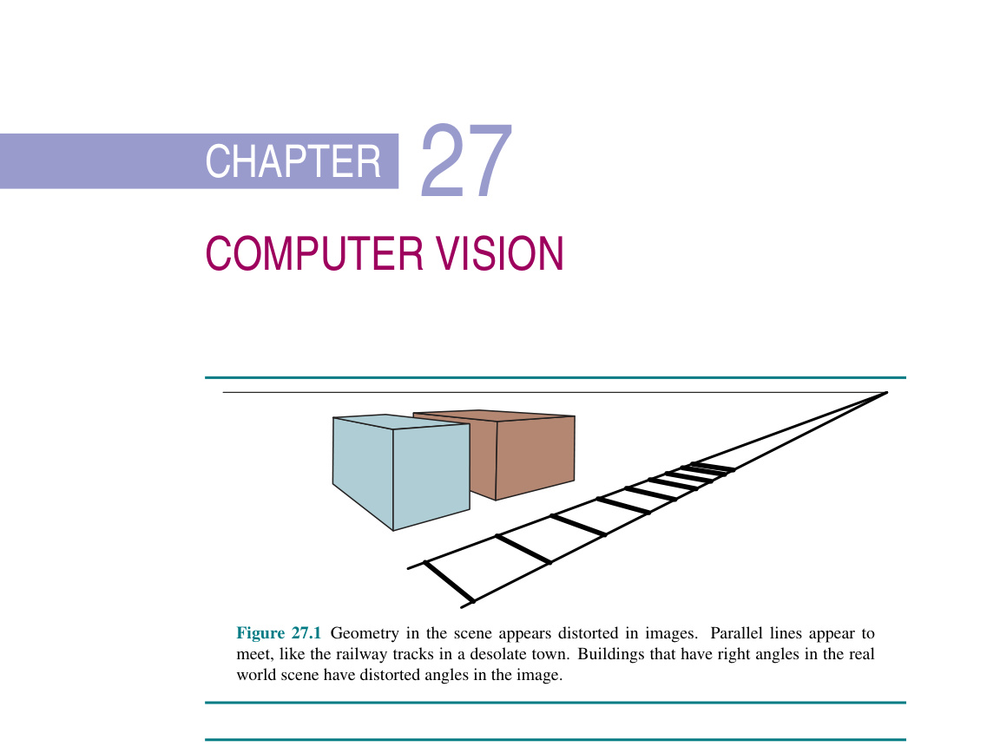
Hình 27.1 Hình học trong không gian thực trông méo mó trong các bức ảnh. Các đường song song dường như hội tụ, như đường ray ở một thị trấn vắng vẻ. Các tòa nhà có góc vuông ngoài đời thực lại có các góc bị méo trong bức ảnh.
Các cảm biến hình ảnh thu thập ánh sáng tán xạ từ vật thể để tạo ra một bức ảnh 2D. Trong mắt chúng ta, các cảm biến này gồm 2 loại tế bào: khoảng 100 triệu tế bào hình que (rods) nhạy cảm với nhiều bước sóng, và 5 triệu tế bào hình nón (cones). Tế bào hình nón (essential cho khả năng nhìn màu) chia làm 3 loại, mỗi loại nhạy cảm với một tập bước sóng riêng. Trong máy ảnh kỹ thuật số, mặt phẳng ảnh (image plane) được chia thành một lưới gồm vài triệu điểm ảnh (pixels).
Mỗi điểm ảnh là một cảm biến cực nhỏ riêng biệt (thường là CCD hoặc CMOS). Mỗi photon đập vào cảm biến sẽ sinh ra hiệu ứng điện từ, cường độ phụ thuộc vào bước sóng photon đó. Đầu ra của cảm biến là tổng tất cả các hiệu ứng trong một khung thời gian, có nghĩa là cảm biến báo cáo lại trung bình có trọng số của cường độ ánh sáng truyền đến.
Để thấy được hình ảnh rõ nét, ta phải đảm bảo mọi photon đập vào một cảm biến phải đến từ (gần như) cùng một điểm duy nhất của vật thể. Cách đơn giản nhất là nhìn vào một đối tượng đứng im qua một Máy ảnh lỗ kim (Pinhole camera), gồm một lỗ nhỏ xíu \(O\) ở mặt trước cái hộp, và một mặt phẳng ảnh ở mặt sau (Hình 27.2). Cái lỗ đó gọi là Khẩu độ (Aperture). Nếu lỗ đủ nhỏ, mỗi cảm biến li ti trên mặt phẳng ảnh sẽ chỉ nhận được những photon đến từ cùng một điểm trên vật thể, giúp ảnh được hội tụ sắc nét. Nếu vật thể di chuyển chậm trong khung thời gian cảm biến, ta vẫn bắt được ảnh. Còn nếu không, vật thể sẽ bị nhòe đi, tạo ra hiệu ứng Nhòe chuyển động (Motion blur).
Dùng một hệ tọa độ 3D với gốc tọa độ tại lỗ kim \(O\). Một điểm \(P\) trong không gian với tọa độ \((X,Y,Z)\) sẽ được chiếu thành điểm \(P'\) trên mặt phẳng ảnh với tọa độ \((x,y,z)\). Nếu \(f\) là Tiêu cự (Focal length) — khoảng cách từ lỗ kim tới mặt phẳng ảnh — theo tam giác đồng dạng, ta có: $$ x = -f \frac{X}{Z}, \quad y = -f \frac{Y}{Z} $$ Các phương trình này định nghĩa một quá trình tạo ảnh gọi là Phép chiếu phối cảnh (Perspective projection). Lưu ý rằng chữ \(Z\) nằm ở mẫu số có nghĩa là vật thể càng xa thì ảnh sẽ càng nhỏ. Dấu trừ cho thấy hình ảnh bị lộn ngược cả từ trái qua phải lẫn từ trên xuống dưới so với thực tế.
Phép chiếu phối cảnh có các đặc tính hình học: Vật thể ở xa trông bé hơn. Các đường song song hội tụ về một điểm trên đường chân trời. Điểm hội tụ đó gọi là Điểm tụ (Vanishing point).
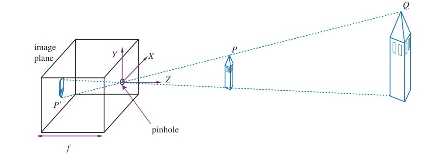
Hình 27.2 Mỗi phần tử nhạy sáng ở mặt sau máy ảnh lỗ kim nhận ánh sáng xuyên qua lỗ từ một hướng nhỏ. Do phép chiếu, các vật lớn ở xa cũng có thể trông y hệt các vật nhỏ ở gần — điểm \(P'\) trên mặt phẳng ảnh có thể đến từ đỉnh ngọn tháp đồ chơi ở \(P\) hoặc đỉnh ngọn tháp khổng lồ ở \(Q\).
Máy ảnh lỗ kim lấy nét tốt, nhưng do cái lỗ quá bé, rất ít ánh sáng lọt qua được và ảnh sẽ tối thui. Trong thời gian ngắn, tín hiệu sẽ bị nhiễu do lượng photon quá ít; người ta gọi ảnh phim tối là ảnh bị "hạt" (grainy), còn ảnh kỹ thuật số tối là ảnh bị "nhiễu" (noisy). Việc mở rộng lỗ (tăng khẩu độ) sẽ giúp ảnh sáng hơn, nhưng lúc này ánh sáng chiếu lên một điểm ảnh lại đến từ nhiều điểm khác nhau trên vật thể thực, khiến ảnh bị mờ. Chúng ta cần một phương tiện để lấy nét lại.
Mắt động vật và máy ảnh hiện đại dùng một Hệ thấu kính (Lens system). Như trong Hình 27.3, ánh sáng từ đỉnh ngọn nến tỏa ra mọi hướng. Một thấu kính sẽ gom toàn bộ ánh sáng chiếu lên bề mặt của nó và hội tụ chúng lại thành một điểm duy nhất trên mặt phẳng ảnh. Kết quả là ảnh sáng hơn, ít nhiễu hơn và rõ nét hơn.
Hình 27.3 Thấu kính thu thập ánh sáng tỏa ra từ một điểm (ví dụ đỉnh ngọn nến) và bẻ hướng để chúng hội tụ lại một điểm trên mặt phẳng ảnh. Các điểm trong không gian nằm gần Mặt phẳng tiêu cự (Focal plane) — nằm trong phạm vi Độ sâu trường ảnh (Depth of field) — sẽ được lấy nét rõ ràng.
Tuy nhiên thấu kính không thể lấy nét cho mọi thứ trong thế giới thực. Chúng chỉ lấy nét được các điểm nằm trong một dải khoảng cách độ sâu \(Z\) cố định từ thấu kính. Trung tâm của dải này (nơi nét nhất) gọi là Mặt phẳng tiêu cự (Focal plane), và phạm vi không gian mà mọi thứ bên trong đó vẫn đủ rõ nét được gọi là Độ sâu trường ảnh (Depth of field). Khẩu độ thấu kính càng lớn thì độ sâu trường ảnh càng nông.
Hiệu ứng hình học của phối cảnh không phải lúc nào cũng rõ rệt. Ví dụ, cửa sổ của ngôi nhà bên kia đường sẽ trông nhỏ hơn cửa sổ ngay sát cạnh bạn, nhưng 2 cái cửa sổ bên kia đường cạnh nhau thì kích thước trông sẽ y như nhau dù một cái hơi xa hơn một chút xíu. Trong trường hợp này ta có thể dùng mô hình đơn giản hơn: Phép chiếu trực giao theo tỷ lệ (Scaled orthographic projection). Nếu khoảng cách chiều sâu \(Z\) của mọi điểm trên vật thể nằm gọn trong dải \(Z_0 \pm \Delta Z\), với \(\Delta Z \ll Z_0\), thì tỷ lệ phối cảnh \(f/Z\) có thể được xấp xỉ thành một hằng số \(s = f/Z_0\). Phương trình lúc này đơn giản là \(x = sX\) và \(y = sY\).
Độ sáng của một điểm ảnh là hàm phụ thuộc vào độ sáng của bề mặt cảnh vật chiếu tới điểm ảnh đó. Ở các máy ảnh hiện đại, hàm này tuyến tính với cường độ ánh sáng ở mức vừa phải, nhưng rất phi tuyến đối với môi trường quá tối hoặc quá sáng. Chúng ta sẽ dùng mô hình tuyến tính. Độ sáng của hình ảnh là một tín hiệu mạnh mẽ gợi ý về cả hình dạng lẫn danh tính vật thể. Sự mơ hồ xảy ra do có ba yếu tố đóng góp vào lượng ánh sáng phản xạ từ điểm trên vật thể vào ảnh: cường độ tổng thể của ánh sáng môi trường (ambient light); điểm đó có quay mặt về phía nguồn sáng hay đang nằm trong bóng râm; và lượng ánh sáng phản xạ (reflection) từ điểm đó.
Con người giải quyết sự mơ hồ về độ sáng cực kỳ tài tình — họ dễ dàng phân biệt giữa một vật màu đen dưới ánh sáng rực rỡ với một vật màu trắng trong bóng râm, ngay cả khi độ sáng tổng thể của chúng như nhau. Tuy nhiên đôi khi con người vẫn nhầm lẫn giữa bóng đổ và hoa văn trang trí — một đường phấn màu tối kẻ dưới gò má thường trông giống như bóng đổ, khiến cho khuôn mặt trông có vẻ gầy gò hơn.
Hầu hết các bề mặt phản xạ ánh sáng qua quá trình Phản xạ khuếch tán (Diffuse reflection). Phản xạ khuếch tán tán xạ ánh sáng đều về mọi hướng rời khỏi bề mặt, thế nên độ sáng của một bề mặt khuếch tán không phụ thuộc vào hướng nhìn. Đa phần các loại vải, bề mặt sơn, gỗ thô ráp, cây cối, đá, bê tông đều có thuộc tính này.
Ngược lại, Phản xạ phản gương (Specular reflection) khiến ánh sáng bật ra khỏi bề mặt theo một chùm hướng nhất định tùy thuộc vào hướng chiếu tới. Gương là một ví dụ. Những gì bạn thấy phụ thuộc hoàn toàn vào góc bạn nhìn vào gương. Trong trường hợp này, chùm tia phản xạ rất hẹp nên bạn có thể nhìn rõ hình dáng vật thể trong gương.
Đối với nhiều bề mặt khác, chùm tia phản xạ này rộng hơn. Bề mặt lúc này xuất hiện những vệt sáng lấp lánh nhỏ, gọi là Điểm loang sáng (Specularities). Khi ánh sáng hoặc bề mặt dịch chuyển, các điểm loang sáng này cũng dịch chuyển theo. Ngoài các vệt sáng này ra, phần còn lại của bề mặt hoạt động như phản xạ khuếch tán. Điểm loang sáng hay gặp ở mặt kim loại, nhựa, sơn, hoặc các bề mặt ướt. Rất dễ để nhận diện chúng vì chúng nhỏ và cực kỳ sáng chói (Hình 27.4).
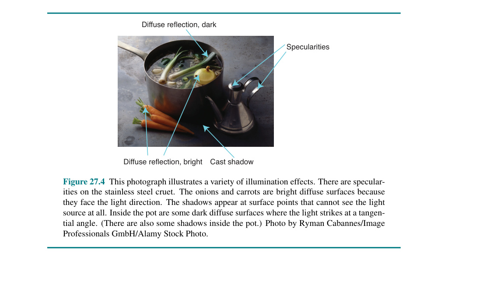
Hình 27.4 Bức ảnh này minh họa nhiều hiệu ứng chiếu sáng khác nhau. Trên các lọ đựng bằng inox có những điểm loang sáng. Củ hành và cà rốt là các bề mặt phản xạ khuếch tán sáng vì chúng hướng mặt về nguồn sáng. Đổ bóng xuất hiện ở các vị trí hoàn toàn không thấy nguồn sáng. Bên trong cái nồi là các bề mặt phản xạ khuếch tán tối do ánh sáng chiếu theo góc tiếp tuyến.
Nguồn sáng chính ngoài trời là mặt trời. Vì nó quá xa nên mọi tia sáng từ mặt trời chiếu tới đều song song với nhau theo một hướng duy nhất. Chúng ta mô phỏng điều này bằng mô hình Nguồn sáng điểm ở xa (Distant point light source). Lượng ánh sáng thu được tại một khoảng bề mặt trong mô hình này phụ thuộc vào góc \(\theta\) giữa hướng chiếu sáng và pháp tuyến của bề mặt (Hình 27.5).
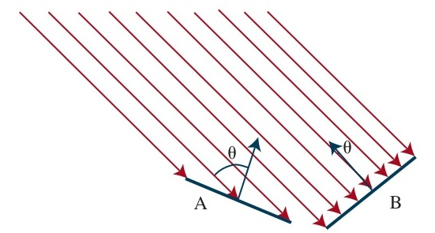
Hình 27.5 Hai bề mặt được chiếu sáng bởi một nguồn điểm ở xa (mũi tên nhạt). Bề mặt A nghiêng ra khỏi nguồn sáng (\(\theta\) gần \(90^\circ\)) nên thu được ít năng lượng hơn do nó cắt ít tia sáng hơn trên cùng một đơn vị diện tích. Bề mặt B hướng thẳng về nguồn sáng (\(\theta\) gần \(0^\circ\)) nên thu được nhiều năng lượng hơn.
Một mảng bề mặt khuếch tán sẽ phản xạ một lượng phân số của ánh sáng nó thu được, phần số này gọi là Suất phản chiếu khuếch tán (Diffuse albedo). Trong thực tế, hệ số \(\rho\) này dao động từ 0.05 đến 0.95. Định luật cosin Lambert (Lambert's cosine law) phát biểu rằng độ sáng của mảng bề mặt đó là: $$ I = \rho I_0 \cos\theta $$ với \(I_0\) là cường độ nguồn sáng, \(\theta\) là góc giữa hướng ánh sáng và pháp tuyến, và \(\rho\) là suất phản chiếu khuếch tán. Định luật này chỉ ra rằng các điểm ảnh sáng là những điểm hướng thẳng về phía nguồn sáng, do đó sự đổ bóng trên bề mặt cung cấp manh mối về hình dáng vật thể. Nếu bề mặt không thấy nguồn sáng, nó sẽ nằm trong Bóng râm (Shadow). Bóng râm ngoài đời hiếm khi đen kịt hoàn toàn vì nó thường nhận được một chút ánh sáng hắt lại từ chỗ khác. Ngoài trời thì bầu trời cũng sáng; trong nhà thì ánh sáng dội từ các tường dội vào bóng râm. Những hiện tượng dội sáng này gọi là Phản xạ qua lại (Interreflections). Để đơn giản, người ta thường cộng thêm một hằng số Ánh sáng môi trường (Ambient illumination) vào công thức dự đoán cường độ sáng.
Trái cây ngọt ngào là một sự "hối lộ" mà cây cối gửi tặng các loài động vật để chúng mang hạt giống đi rải khắp nơi. Các cây có khả năng phát ra tín hiệu "quả này chín rồi" sẽ có lợi thế sinh tồn lớn, và các động vật đọc được tín hiệu đó cũng vậy. Vì thế, hầu hết trái cây khi còn xanh thì màu xanh lục, khi chín thì chuyển đỏ hoặc vàng. Ánh sáng tới mắt mang theo năng lượng ở các bước sóng khác nhau, biểu diễn bằng mật độ năng lượng phổ.
Máy ảnh và hệ thị giác con người nhạy cảm với dải bước sóng từ khoảng 380nm (tím) đến 750nm (đỏ). Mắt người có 3 loại thụ thể nhạy cảm màu sắc. Cảm giác "thấy màu" xuất hiện khi não bộ so sánh phản ứng của các thụ thể gần nhau trên võng mạc. Nguyên lý ba màu (Principle of trichromacy) do Thomas Young đề xuất năm 1802 nói rằng mắt người có thể phối trộn mọi màu sắc phức tạp nhất chỉ bằng cách hòa trộn 3 Màu cơ bản (Primaries). Đỏ (Red), Lục (Green) và Lam (Blue) là 3 màu cơ bản thông dụng (RGB).
Với hầu hết ứng dụng thị giác máy tính, ta mô hình hóa bề mặt vật thể có 3 suất phản chiếu khuếch tán (RGB) độc lập và nguồn sáng cũng có 3 cường độ ánh sáng (RGB). Định luật cosin Lambert sẽ được áp dụng cho từng màu để tính ra các giá trị điểm ảnh Red, Green, Blue. Mô hình này dự đoán đúng việc cùng một bề mặt sẽ ra các hình ảnh màu khác nhau nếu chiếu đèn màu khác nhau. Nhưng con người thì rất giỏi ở việc loại bỏ hiệu ứng màu đèn để ước tính ra màu thật của bề mặt dưới ánh sáng trắng, một hiệu ứng gọi là Sự bất biến màu sắc (Color constancy).
Ánh sáng bật ra từ cảnh vật để tạo ra một hình ảnh chứa mười hai triệu pixel, mỗi pixel tốn 3 byte. Chắc chắn sẽ có nhiễu trong ảnh và khối lượng dữ liệu này là khổng lồ. Cách bắt đầu phân tích là tạo ra những biểu diễn giản lược, loại bỏ tiểu tiết nhưng giữ lại phần trọng yếu. Hiện nay người ta thường dùng dữ liệu để học (learning) ra các biểu diễn này. Nhưng có bốn thuộc tính đặc biệt phổ biến trong mọi hình ảnh: cạnh (edges), họa tiết (texture), luồng quang học (optical flow) và phân đoạn khu vực (segmentation).
Một cạnh (edge) xuất hiện tại nơi có sự khác biệt lớn về cường độ ánh sáng pixel so với khu vực lân cận. Đây là thao tác cục bộ, không cần biết đối tượng gì đang ở trong ảnh. Vì vậy phát hiện cạnh thường là bước xử lý "sớm" hay "cấp thấp" (low-level). Còn để nhận diện họa tiết, luồng dịch chuyển hay cắt ảnh thành khu vực (segmentation) thì đòi hỏi nhìn bao quát khu vực lớn hơn, được gọi là các phép toán "cấp trung" (mid-level).
Cạnh là các đường thẳng hoặc đường cong trên mặt phẳng ảnh, vắt ngang qua những vị trí có sự thay đổi "đáng kể" về độ sáng ảnh. Mục tiêu của việc dò cạnh là tóm lược bức ảnh nặng nhiều megabyte thành một biểu diễn gọn nhẹ hơn (như trong Hình 27.6). Cạnh có thể hình thành do 4 lý do (như đánh số trong hình): (1) Sự đứt gãy về khoảng cách chiều sâu (vượt qua mép cạnh là đến không gian nền sau); (2) Bề mặt gấp khúc thay đổi pháp tuyến; (3) Vật liệu sơn đổi màu; (4) Bóng đổ từ ánh sáng.
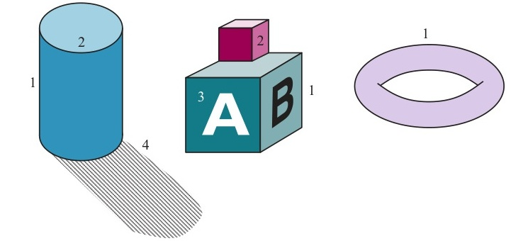
Hình 27.6 Bốn loại cạnh: (1) Do chiều sâu; (2) Do pháp tuyến bề mặt; (3) Do sự phản xạ/đổi màu; (4) Do ánh sáng tạo bóng đổ (shadows).
Việc tìm kiếm cạnh đòi hỏi sự cẩn thận. Nếu ta dùng phép lấy đạo hàm cường độ ảnh \(I'(x)\), cạnh sẽ là những nơi đạo hàm đạt giá trị lớn (như đồ thị giữa ở Hình 27.7, ngay tại vị trí \(x=50\)). Nhưng vì luôn có độ Nhiễu (Noise), đạo hàm cũng tăng vọt ở những chỗ tào lao khác (như \(x=75\)). Nhiễu có thể do nhiễu nhiệt cảm biến, hoặc do bề mặt vật bị xước xát li ti. Nếu ta dùng thao tác "làm mịn" (smooth) bức ảnh trước khi đạo hàm, các đỉnh nhiễu này sẽ biến mất (đồ thị cuối Hình 27.7).
Làm mịn là lấy giá trị trung bình có trọng số của các pixel lân cận, pixel nào càng gần thì trọng số càng cao. Một lựa chọn trọng số cực kỳ kinh điển là Bộ lọc Gaussian (Gaussian filter), sử dụng hàm Gaussian: $$ G_\sigma(x, y) = \frac{1}{2\pi\sigma^2} e^{-(x^2+y^2)/2\sigma^2} $$ Áp dụng bộ lọc Gaussian nghĩa là tính tổng các \(I(x,y)G_\sigma(d)\). Quá trình tổng có trọng số này diễn ra liên tục, phổ biến đến mức toán học gọi nó là phép Tích chập (Convolution), ký hiệu là dấu sao \(*\).
Vậy chức năng làm mịn có thể đạt được bằng cách tích chập bức ảnh với phân phối Gaussian, \(I * G_\sigma\). Một \(\sigma\) bằng 1 pixel là đủ để làm mịn một ít nhiễu, trong khi 2 pixel sẽ làm mịn nhiều hơn nhưng làm mất đi một vài chi tiết. Vì ảnh hưởng của Gaussian phai nhạt rất nhanh theo khoảng cách, trong thực tế ta có thể thay thế \(\pm \infty\) trong các công thức tổng bằng khoảng \(\pm 3\sigma\).
Ở đây ta có cơ hội tối ưu hóa: ta có thể kết hợp việc làm mịn và tìm cạnh vào một phép toán duy nhất. Theo một định lý, với bất kỳ hàm \(f\) và \(g\) nào, đạo hàm của tích chập \((f * g)'\) bằng với tích chập của hàm đó với đạo hàm hàm kia \(f * (g')\). Vì vậy, thay vì làm mịn ảnh rồi mới tính đạo hàm, ta có thể tích chập bức ảnh trực tiếp với đạo hàm của hàm làm mịn Gaussian, \(G'_\sigma\). Sau đó ta sẽ đánh dấu những đỉnh phản hồi nào vượt qua một ngưỡng (threshold) nhất định làm cạnh, nhằm loại bỏ các đỉnh nhiễu giả.
Thuật toán này có thể tổng quát hóa tự nhiên từ mặt cắt một chiều sang hình ảnh 2D thông thường. Trong 2D, các cạnh có thể nằm ở bất kỳ góc \(\theta\) nào. Nếu coi độ sáng hình ảnh là một hàm vô hướng của các biến \(x, y\), thì gradient của nó là một vector: $$ \nabla I = \left( \begin{matrix} \frac{\partial I}{\partial x} \\ \frac{\partial I}{\partial y} \end{matrix} \right) $$ Cạnh tương ứng với những vị trí trong ảnh nơi độ sáng thay đổi đột ngột, do đó độ lớn của gradient, \(\|\nabla I\|\), phải lớn tại một điểm cạnh. Khi hình ảnh sáng lên hoặc tối đi, vector gradient tại mỗi điểm sẽ dài ra hoặc ngắn đi, nhưng hướng của gradient $$ \frac{\nabla I}{\|\nabla I\|} = \left( \begin{matrix} \cos\theta \\ \sin\theta \end{matrix} \right) $$ thì không đổi. Điều này cho ta một góc \(\theta = \theta(x, y)\) tại mỗi pixel, xác định Hướng của cạnh (Orientation) tại pixel đó. Đặc trưng này thường rất hữu ích vì nó không phụ thuộc vào cường độ sáng của ảnh.
Giống như thảo luận về việc dò cạnh 1 chiều, để tạo gradient, ta không tính trực tiếp \(\nabla I\), mà tính \(\nabla (I * G_\sigma)\) sau khi làm mịn bằng Gaussian. Một tính chất của tích chập là điều này tương đương với việc tích chập hình ảnh với các đạo hàm riêng của Gaussian. Khi đã có gradient, ta có thể thu được các cạnh bằng cách tìm các điểm cạnh và nối chúng lại với nhau. Để phân biệt một điểm có phải là điểm cạnh hay không, ta phải nhìn vào các điểm nằm phía trước và phía sau dọc theo hướng gradient. Nếu độ lớn gradient tại một trong những điểm kề đó lớn hơn, thì ta có thể có một điểm cạnh tốt hơn bằng cách dịch chuyển nhẹ đường cạnh. Thêm vào đó, nếu độ lớn gradient quá nhỏ, điểm đó không thể là điểm cạnh. Tóm lại, tại một điểm cạnh, độ lớn gradient đạt cực đại cục bộ dọc theo hướng gradient và độ lớn đó phải vượt qua một ngưỡng phù hợp.
Khi ta đã đánh dấu được các pixel cạnh bằng thuật toán này, giai đoạn tiếp theo là nối những pixel thuộc về cùng một đường cong cạnh. Điều này có thể thực hiện với giả định rằng hai pixel cạnh kề nhau có hướng nhất quán thì thuộc về cùng một đường cạnh.
Dò cạnh không hoàn hảo. Hình 27.8(a) là ảnh một cái dập ghim trên bàn, và Hình 27.8(b) hiển thị đầu ra của thuật toán dò cạnh trên bức ảnh này. Như bạn thấy, đầu ra không hoàn hảo: có những khoảng trống nơi cạnh bị biến mất, và có những cạnh "nhiễu" không tương ứng với bất kỳ thứ gì quan trọng trong thực tế. Các giai đoạn xử lý sau này sẽ phải sửa lại những lỗi đó.
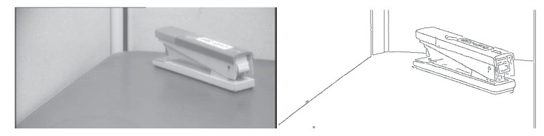
Hình 27.8 (a) Bức ảnh của một cái dập ghim. (b) Các cạnh tính toán được từ ảnh (a).
Trong ngôn ngữ hàng ngày, họa tiết (texture) của một bề mặt ám chỉ cảm giác khi ta đưa ngón tay chạm vào nó (các từ "texture", "textile" - dệt may, và "text" - văn bản, đều có chung gốc Latin là từ "dệt"). Trong thị giác máy tính, Họa tiết (Texture) dùng để chỉ một mô hình hoa văn trên bề mặt có thể cảm nhận bằng thị giác. Thường thì các hoa văn này có tính lặp lại tương đối đều. Ví dụ như các ô cửa sổ trên một tòa nhà, các mũi len trên áo len, đốm trên da báo, lá cỏ trên bãi cỏ, đá cuội trên bãi biển và đám đông khán giả trên sân vận động.
Đôi khi sự lặp lại diễn ra rất định kỳ, như các mũi khâu áo len; trong một số trường hợp khác, như đám đá cuội trên bãi biển, sự lặp lại chỉ mang tính thống kê: mật độ đá cuội hầu như giống nhau ở các khu vực khác nhau của bãi biển. Một mô hình thô cho họa tiết là sự lặp lại của các phần tử họa tiết cơ bản, gọi là Texel. Mô hình này rất hữu ích vì thực ra để tìm được một loại hoa văn thực tế mà "không bao giờ lặp lại" lại là việc cực khó.
Họa tiết là một thuộc tính của một "mảng" hình ảnh chứ không phải của một pixel đơn lẻ. Một mô tả họa tiết tốt phải tóm tắt được mảng ảnh đó trông như thế nào. Việc mô tả này không được thay đổi khi điều kiện ánh sáng thay đổi. Điều này loại bỏ cách dùng điểm cạnh; nếu họa tiết được chiếu sáng rực rỡ, nhiều chỗ trong mảng sẽ có độ tương phản cao và sinh ra nhiều điểm cạnh; nhưng nếu mảng đó nằm trong bóng râm, nhiều cạnh sẽ không vượt qua ngưỡng. Hơn nữa, việc mô tả cũng phải biến đổi một cách có lý khi ta xoay mảng ảnh. Phải giữ được sự phân biệt giữa sọc dọc và sọc ngang, nhưng không phân biệt nếu sọc dọc bị xoay thành sọc ngang.
Các cách biểu diễn họa tiết mang những tính chất này đã chứng minh tính hữu ích trong hai nhiệm vụ chính. Đầu tiên là nhận dạng vật thể — ngựa vằn và ngựa thường có hình dáng như nhau, nhưng họa tiết hoàn toàn khác nhau. Thứ hai là dùng để khớp các mảng của ảnh này với ảnh kia, đây là bước quan trọng để khôi phục thông tin 3D từ nhiều bức ảnh (Mục 27.6.1).
Đây là cấu trúc cơ bản cho một biểu diễn họa tiết. Đưa vào một mảng hình ảnh, hãy tính hướng gradient tại mỗi pixel, rồi mô tả đặc trưng của mảng bằng một biểu đồ tần suất (histogram) các hướng. Hướng gradient phần lớn bất biến với sự thay đổi của ánh sáng (gradient sẽ dài ra nhưng không đổi hướng). Biểu đồ tần suất các hướng có vẻ nắm bắt được rất tốt khía cạnh quan trọng của họa tiết. Ví dụ sọc dọc sẽ có hai đỉnh trong biểu đồ (một cho cạnh trái sọc, một cho cạnh phải); đốm báo sẽ có các hướng phân bố đồng đều hơn.
Tuy nhiên ta không biết nên mô tả mảng lớn bao nhiêu là vừa. Có hai chiến lược. Trong các ứng dụng cụ thể, thông tin ảnh tự tiết lộ mảng nên lớn cỡ nào (ví dụ, ta có thể mở rộng mảng sọc cho đến khi phủ hết con ngựa vằn). Một giải pháp khác là mô tả một mảng lấy tâm tại mỗi pixel theo nhiều kích thước tỷ lệ (scale) khác nhau, chạy từ vài pixel đến toàn bộ hình ảnh. Giờ chia mảng thành nhiều ô nhỏ (bins), trong mỗi ô xây dựng một biểu đồ tần suất hướng, rồi tóm tắt chuỗi biểu đồ xuyên suốt các ô. Ngày nay người ta hiếm khi xây dựng các mô tả này bằng tay nữa. Thay vào đó, mạng nơ-ron tích chập được dùng để tự động tạo ra biểu diễn họa tiết. Mặc dù vậy, các biểu diễn do mạng lưới tạo ra dường như cũng phảng phất mô phỏng lại phương pháp cấu trúc thủ công này.
Tiếp theo, hãy xem xét chuyện gì sẽ xảy ra nếu ta có một chuỗi video thay vì chỉ một tấm ảnh tĩnh. Bất cứ khi nào có chuyển động tương đối giữa máy ảnh và vật thể trong cảnh, chuyển động xuất hiện trên ảnh đó được gọi là Luồng quang học (Optical flow). Nó mô tả hướng và tốc độ di chuyển của các đặc trưng trong hình ảnh do hệ quả của chuyển động tương đối giữa người quan sát và khung cảnh. Ví dụ, nhìn từ ô tô đang chạy, những vật ở xa di chuyển chậm hơn nhiều so với vật ở gần, do đó tốc độ di chuyển hình ảnh có thể cho ta biết phần nào khoảng cách.
Trong Hình 27.9, chúng ta thấy 2 khung hình (frames) từ video của một tay vợt tennis. Bên phải là các vector luồng quang học tính từ hai ảnh này. Luồng quang học mã hóa thông tin hữu ích về cấu trúc khung cảnh — vận động viên thì di chuyển, còn phần phông nền (nhìn chung) đứng yên. Hơn nữa, các vector luồng còn tiết lộ tay vợt đang làm gì — một cánh tay và một cẳng chân đang di chuyển cực nhanh, còn các bộ phận khác thì không.
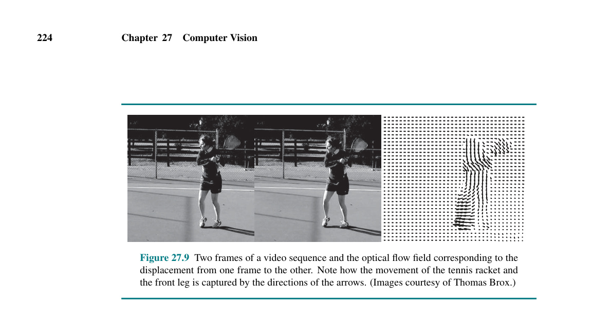
Hình 27.9 Hai khung hình của chuỗi video và trường vector luồng quang học tương ứng hiển thị sự dịch chuyển từ khung này sang khung kia. Lưu ý cách chuyển động của cây vợt và chân trước được thể hiện bằng hướng các mũi tên.
Trường vector luồng quang học có thể biểu diễn bằng các thành phần \(v_x(x,y)\) theo hướng \(x\) và \(v_y(x,y)\) theo hướng \(y\). Để đo luồng quang học, ta phải tìm những điểm tương ứng giữa thời điểm khung hình này và thời điểm kế tiếp. Một kỹ thuật ngây ngô nhất dựa trên thực tế là các mảng ảnh xung quanh các điểm tương ứng sẽ có mô hình cường độ sáng giống nhau. Hãy xét một khối pixel tập trung tại điểm \(p, (x_0, y_0)\) ở thời điểm \(t\). Ta đem so khối này với các khối ứng viên \(q_i\) nằm tại \((x_0+D_x, y_0+D_y)\) ở thời điểm \(t + D_t\). Thước đo độ giống nhau thường dùng là Tổng bình phương sai số (Sum of squared differences - SSD): $$ SSD(D_x, D_y) = \sum_{(x,y)} (I(x,y,t) - I(x+D_x, y+D_y, t+D_t))^2 $$
Ở đây, \((x,y)\) lặp qua các pixel trong khối có tâm tại \((x_0,y_0)\). Ta cần tìm \((D_x, D_y)\) sao cho SSD đạt mức nhỏ nhất. Luồng quang học tại \((x_0,y_0)\) sau đó chính là \((v_x, v_y) = (D_x/D_t, D_y/D_t)\). Lưu ý rằng để cách này hiệu quả, trong khung cảnh cần phải có chút họa tiết nào đó để các cửa sổ có đủ sự biến thiên độ sáng giữa các pixel. Nếu nhìn vào một bức tường trắng toát, thì SSD ở cửa sổ \(q\) nào cũng na ná nhau, và thuật toán rơi vào tình trạng đoán bừa. Các thuật toán tính luồng quang học hiện đại hiệu quả cao thường dựa trên hàng loạt các ràng buộc bổ sung khác để đối phó với những tình huống mà cảnh vật chỉ có một chút họa tiết mờ nhạt.
Phân đoạn (Segmentation) là quá trình bẻ hình ảnh thành các nhóm pixel giống nhau. Ý tưởng cơ bản là mỗi pixel có thể gắn với một vài thuộc tính thị giác như độ sáng, màu sắc và họa tiết. Bên trong một vật thể, hay một bộ phận của vật thể, các thuộc tính này thường ít thay đổi, trong khi nếu lướt qua đường biên giới giữa các vật thể thì sẽ có sự khác biệt rất lớn ở một hoặc nhiều thuộc tính. Chúng ta cần tìm cách phân chia (partition) hình ảnh thành nhiều tập hợp pixel sao cho các ràng buộc này được thỏa mãn tốt nhất có thể. Lưu ý rằng nếu chỉ dùng thuật toán dò cạnh là không đủ, bởi rất nhiều cạnh không phải là đường biên của vật thể. Ví dụ một con hổ núp trong bụi cỏ có thể sinh ra vô số cạnh trên từng sọc lông và trên từng nhánh cỏ. Nếu chìm trong đống dữ liệu cạnh lộn xộn đó, ta có thể bỏ lỡ con hổ vì lẫn lộn với sọc lông.
Có hai cách tiếp cận bài toán này: một cách tập trung vào việc dò đường ranh giới của các nhóm này, và cách kia thì tập trung vào việc tách hẳn ra các nhóm, gọi là các Vùng (Regions). Hình 27.10 minh họa cách dò đường ranh giới ở hình (b) và trích xuất thành vùng ở hình (c) và (d).
Một cách để hình thức hóa bài toán phát hiện đường ranh giới là coi nó như một bài toán phân loại (classification problem) trong học máy (machine learning). Một đường cong ranh giới tại pixel \((x,y)\) sẽ có góc định hướng \(\theta\). Khu vực lân cận xung quanh \((x,y)\) giống như một cái đĩa, bị cắt làm hai nửa bởi đường kính theo góc \(\theta\). Ta có thể tính xác suất \(P_b(x,y,\theta)\) có hay không đường ranh giới tại góc đó bằng cách so sánh đặc trưng hai nửa cái đĩa. Cách làm tự nhiên là huấn luyện một bộ phân loại bằng tập dữ liệu hình ảnh đã được con người đánh dấu đâu là biên — mục tiêu là hệ thống đánh dấu chuẩn xác các biên giống hệt con người và không đánh sai lệch.
Ranh giới tìm được bằng kỹ thuật này tốt hơn nhiều so với kỹ thuật dò cạnh đơn giản đã mô tả phía trước. Tuy nhiên nó vẫn có hai hạn chế: (1) Các pixel biên tìm được từ việc đặt ngưỡng \(P_b(x,y,\theta)\) không đảm bảo sẽ nối liền thành các đường cong khép kín, nên không thể sinh ra các "vùng" được; và (2) Việc ra quyết định chỉ khai thác ngữ cảnh cục bộ mà không sử dụng các ràng buộc nhất quán trên toàn cục.
Cách tiếp cận thứ hai là cố gắng "gom cụm" (cluster) các pixel thành các vùng dựa trên sự tương đồng về độ sáng, màu và họa tiết. Có nhiều cách để hình thức hóa toán học cho ý tưởng này. Chẳng hạn, Shi và Malik (2000) biến việc này thành bài toán phân chia đồ thị. Các nút (nodes) của đồ thị chính là các pixel, và các cạnh là các liên kết giữa các pixel. Trọng số \(W_{ij}\) trên liên kết giữa cặp pixel \(i\) và \(j\) dựa trên mức độ giống nhau về độ sáng, màu, họa tiết v.v. Sau đó họ tìm cách phân chia đồ thị sao cho đạt cực tiểu một tiêu chí cắt chuẩn hóa (normalized cut). Nói một cách nôm na, tiêu chí để cắt đồ thị là tối thiểu hóa tổng trọng số các kết nối vắt ngang giữa các nhóm và tối đa hóa tổng trọng số các kết nối nằm trong nội bộ các nhóm.
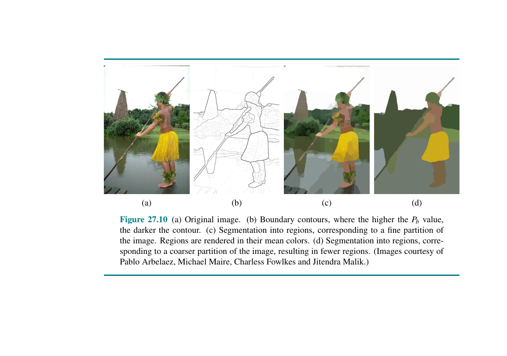
Hình 27.10 (a) Ảnh gốc. (b) Các đường viền biên (boundary contours), nơi giá trị \(P_b\) càng cao thì đường viền càng sẫm. (c) Phân đoạn thành các vùng, tương ứng với việc phân chia ảnh ở mức cực chi tiết. Các vùng được tô bằng màu trung bình của chúng. (d) Phân đoạn ở mức độ thô hơn, thu được ít vùng hơn. (Ảnh được cung cấp bởi Pablo Arbelaez, Michael Maire, Charless Fowlkes và Jitendra Malik.)
Hóa ra hai cách tiếp cận dò đường ranh giới và tìm vùng lại có thể được kết nối với nhau, nhưng ta không đào sâu ở đây. Việc phân đoạn nếu chỉ đơn thuần dựa vào thuộc tính cục bộ cấp thấp như độ sáng hay màu thì không thể mong đợi nó khoanh đúng vùng ranh giới chuẩn của vật thể thực. Để tìm đường biên gắn chặt với vật thể chuẩn xác, hệ thống phải kết hợp thêm kiến thức nhận thức "cấp cao" về các loại vật thể nó có thể đụng độ trong một cảnh. Hiện nay, một chiến lược rất phổ biến là cố tình chia nhỏ ảnh (over-segmentation) quá mức cần thiết, nhờ đó ta đảm bảo không bao giờ bỏ sót biên thật (dù sẽ sinh ra vô số biên rác). Kết quả nhận được là các siêu điểm ảnh (superpixels). Superpixel giúp giảm chi phí tính toán cực kỳ lớn cho các thuật toán sau đó, vì số lượng superpixel chỉ là hàng trăm thay vì là hàng triệu điểm ảnh (pixels) thô. Việc khai thác kiến thức cấp cao của vật thể là chủ đề của phần tiếp theo, còn làm thế nào để thực sự nhận diện ra vật thể nằm ở đâu trong ảnh sẽ nằm ở Mục 27.5.
Phân loại hình ảnh phục vụ hai bài toán lớn. Thứ nhất, ảnh chủ yếu chỉ có đối tượng thuộc một tập phân loại biết trước, và không có gì khác lọt vào bức ảnh — ví dụ hình ảnh thời trang, nội thất, nơi phông nền bị loại bỏ, đầu ra phân loại sẽ là "áo len lông cừu" hoặc "ghế bàn làm việc".
Trong trường hợp thứ hai, mỗi ảnh lại thể hiện một cảnh có nhiều vật thể kết hợp. Tại thảo nguyên bạn có thể thấy một con hươu cao cổ và một con sư tử, ở phòng khách bạn có thể thấy ghế bành và đèn bàn, nhưng chả ai lại mong đợi một con hươu cao cổ hay tàu ngầm trong phòng khách cả. Chúng ta hiện đã có các phương pháp phân loại hình ảnh quy mô lớn có thể xuất ra cực chuẩn kết quả là "thảo nguyên" hay "phòng khách".
Các hệ thống hiện đại phân loại ảnh sử dụng Diện mạo (Appearance) (tức là màu sắc và họa tiết, trái ngược với cấu trúc hình học). Ở đây gặp hai khó khăn. Đầu tiên, những tiêu bản khác nhau của cùng một lớp có thể có diện mạo khác nhau — có con mèo đen và có con mèo màu cam. Thứ hai, cùng một con mèo nhưng nhìn lúc này lúc khác lại khác nhau, do bị chi phối bởi hàng loạt các hiệu ứng (như minh họa ở Hình 27.11):
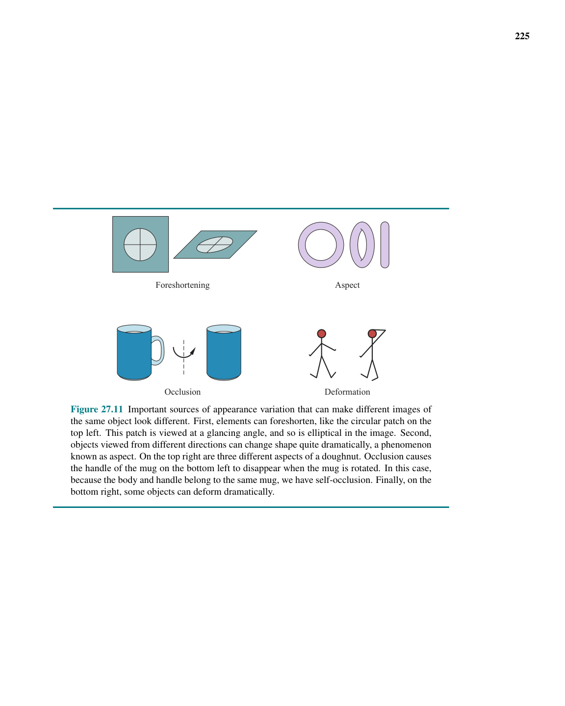
Hình 27.11 Những nguồn thay đổi diện mạo quan trọng khiến các góc ảnh khác nhau của cùng một vật thể trông khác nhau hoàn toàn. Đầu tiên, hiện tượng rút ngắn phối cảnh (Foreshortening) khiến một mảng tròn (góc trái trên) khi nhìn nghiêng sẽ trở thành hình elip. Thứ hai, cùng một vật thể nhìn từ nhiều hướng có thể thay đổi hình dạng nghiêm trọng, gọi là hiện tượng góc độ khía cạnh (Aspect). Góc trên phải là ba khía cạnh của một cái bánh donut. Sự che khuất (Occlusion) khiến quai cốc ở góc dưới bên trái biến mất khi cái cốc bị xoay đi. Trong trường hợp này vì thân và quai cùng thuộc một vật thể nên gọi là tự che khuất (self-occlusion). Cuối cùng, góc phải dưới cho thấy một số vật thể có thể bị biến dạng (Deformation) mạnh mẽ.
Các phương pháp hiện đại xử lý những vấn đề này bằng cách học ra các biểu diễn và bộ phân loại từ dữ liệu huấn luyện khổng lồ thông qua một mạng nơ-ron tích chập. Nếu tập huấn luyện đủ đa dạng phong phú, bộ phân loại sẽ được tiếp xúc nhiều lần với mọi hiệu ứng ở trên, nhờ đó nó sẽ biết cách điều chỉnh khi dự đoán.
Mạng nơ-ron tích chập (CNNs) đạt thành công vang dội ở tư cách là các bộ phân loại ảnh. Với dữ liệu cực khủng và các kỹ năng tinh chỉnh huấn luyện, CNN tạo ra hệ thống phân loại xuất sắc, mạnh hơn mọi phương pháp mà con người từng sản sinh ra trước đây.
Tập dữ liệu ImageNet đóng một vai trò lịch sử trong sự phát triển của hệ thống phân loại hình ảnh bằng việc cung cấp hơn 14 triệu hình ảnh, được phân vào hơn 30.000 phân mục chi tiết cực sâu. ImageNet còn kích thích tiến bộ bằng cuộc thi thường niên. Các hệ thống dự thi được chấm dựa trên cả độ chính xác cho đáp án tốt nhất duy nhất (top-1 accuracy) lẫn độ chính xác top-5 (trong đó hệ thống được đưa ra 5 dự đoán — ví dụ như malamute, husky, akita, samoyed, chó eskimo). ImageNet có tới 189 phân mục về loài chó, nên ngay cả những người yêu chó nhất cũng lúng túng khi bắt đưa ra một dự đoán tên chó duy nhất.
Trong cuộc thi ImageNet đầu tiên năm 2010, hệ thống vô địch chỉ đạt mốc ~70% top-5 accuracy. Sự đổ bộ của mạng nơ-ron tích chập (CNN) năm 2012 và sau đó đã đưa độ chính xác lên đỉnh điểm 98% top-5 (vượt qua cả con người) và 87% cho dự đoán chuẩn xác một đáp án (top-1) vào năm 2019. Lý do chủ chốt làm nên sự thành công này là vì các đặc trưng mà mô hình phân loại CNN sử dụng được "tự học" (learned from data), chứ không phải do nhà nghiên cứu "chế tác bằng tay" (hand-crafted); việc này đảm bảo các đặc trưng đó thực sự hữu ích cho việc phân loại.
Sự tiến bộ vũ bão của việc phân loại hình ảnh đến từ lượng dữ liệu khổng lồ đầy thử thách như ImageNet; các cuộc thi công khai cực kỳ công bằng; và văn hóa chia sẻ các mô hình thành công. Nhóm chiến thắng thường công bố mã nguồn, hay thậm chí tham số mô hình đã huấn luyện xong (pretrained parameters), giúp những người khác dễ dàng kế thừa, tinh chỉnh và đẩy kiến trúc đó đi xa hơn.
Để hiểu về bài toán phân loại ảnh ta nên quan sát bộ dữ liệu, nhưng ImageNet thì khổng lồ quá để xem xét chi tiết. Bộ dữ liệu MNIST là tập gồm 70,000 bức ảnh các chữ số viết tay từ 0-9, thường dùng làm tập khởi động làm nóng tiêu chuẩn. Nhìn lướt qua bộ dữ liệu này (ví dụ Hình 27.12) sẽ bộc lộ một số thuộc tính tổng quát, rất quan trọng. Bạn có thể thay đổi vài chi tiết nhỏ trên bức ảnh chữ số mà không làm mất đi định danh của nó: dịch sang ngang dọc, xoay nghiêng ngả, làm cho sáng hơn, tối hơn, hay to ra bé đi. Tức là các giá trị pixel riêng lẻ chẳng nói lên điều gì cả — ta biết số 8 phải có chỗ đen ở khu vực giữa, và số 0 thì không có chỗ đen giữa tâm, nhưng các đốm đen đó cũng nằm vị trí trượt đi chút xíu với mỗi nét viết khác nhau của số 8.
Thuộc tính quan trọng khác của hình ảnh là các mẫu hoa văn cục bộ mang thông tin rất cao: Các số 0, 6, 8, 9 có vòng khép kín (loops); 4 và 8 có điểm giao chéo (crossings); 1, 2, 3, 5, 7 có phần vạch đứt khúc (line endings), nhưng không có vòng và điểm giao chéo; các số 6 và 9 có cả vòng lặp lẫn đứt khúc. Hơn nữa, mối quan hệ không gian giữa các hoa văn cục bộ cũng chứa thông tin. Một số 1 có hai đứt khúc nằm đè trên nhau; số 6 có nét đứt nằm ngay phía trên cái vòng lặp. Những quan sát này dẫn đến một chiến lược vốn là "tôn chỉ" trung tâm của thị giác máy tính hiện đại: xây dựng các đặc trưng (features) chuyên phát hiện các khuôn mẫu nằm ở lân cận siêu cục bộ; rồi dùng đặc trưng khác nhìn vào các khuôn mẫu vừa tìm được đó; rồi lại có đặc trưng khác ngắm nhìn khuôn mẫu tiếp theo, và cứ thế.
Và đây chính là điểm xuất sắc của Mạng Nơ-ron Tích chập. Hãy tưởng tượng một tầng mạng (layer) — gồm phép tích chập (convolution) theo sau là hàm kích hoạt ReLU — chính là một máy quét khuôn mẫu cục bộ (Hình 27.12). Tích chập dùng kernel quét qua mọi "cửa sổ" xem cửa sổ đó trông có khớp với mẫu kernel không; hàm ReLU cho điểm cửa sổ nào giống thì tăng cao, không giống thì ép về 0. Tích chập với nhiều hạt nhân (kernels) giúp tìm nhiều mẫu đa dạng; không những vậy, các mẫu phức hợp có thể được nhận diện bằng cách úp thêm lớp thứ hai vào đầu ra của lớp đầu tiên.
Hãy nghĩ về đầu ra của lớp tích chập đầu tiên. Mỗi vị trí nhận dữ liệu từ các pixel trong cửa sổ nhỏ xung quanh nó. Đầu ra của ReLU làm thành máy dò mẫu thô sơ. Nay nếu đặt lớp thứ hai đè lên đỉnh lớp này, mỗi vị trí ở lớp thứ hai lại nhận đầu vào từ các giá trị của lớp một (trong phạm vi lân cận của lớp một). Tức là lớp 2 lúc này đang tiếp thu thông tin từ một cửa sổ pixel "to hơn nhiều" so với lớp 1. Bạn nên coi lớp 2 đang điểu diễn "khuôn mẫu của các khuôn mẫu". Nếu đặt tiếp lớp ba lên, vị trí lớp ba sẽ phụ thuộc một vùng pixel siêu lớn; lớp bốn phụ thuộc vùng cực khủng. Mạng đang tạo ra các hệ khuôn mẫu phân cấp nhiều bậc, và việc đó hoàn toàn tự học từ dữ liệu chứ không hề do kỹ sư nhét tay vào code.
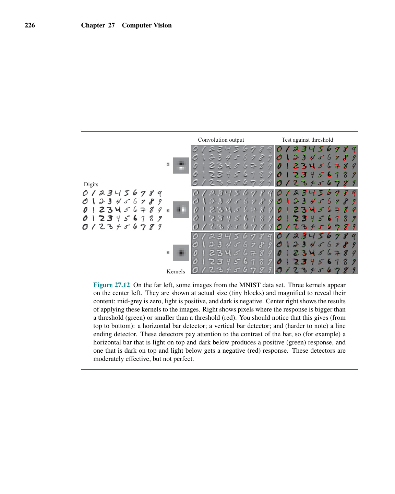
Hình 27.12 Bên trái ngoài cùng là vài hình ảnh từ tập MNIST. Ba hạt nhân (kernels) nằm ở giữa trái. Chấm nhỏ là kích thước thực còn bảng ô vuông là phóng đại phóng to nội dung: xám vừa (mid-grey) là 0, sáng là số dương, tối đen là số âm. Giữa bên phải hiển thị kết quả quét hạt nhân qua tấm ảnh. Hình ngoài cùng bên phải hiển thị phần pixel có phản hồi vượt ngưỡng threshold (xanh lá cây) và phần pixel phản hồi âm dưới ngưỡng threshold (đỏ). Bạn có thể dễ dàng thấy kết quả thu được (từ trên xuống): máy dò vạch ngang; máy dò vạch dọc; và (hơi khó thấy chút) máy dò đường cong/nét đứt. Các máy dò chú ý vào "tương phản" của đường thẳng, thế nên một vạch ngang nếu trên sáng dưới đen sẽ thu được màu xanh dương (+), còn nếu trên đen dưới sáng lại thu được màu đỏ (-). Mấy cái máy dò này hoạt động tương đối tốt, dẫu không hoàn hảo.
Việc kéo một CNN "ra khỏi hộp" rồi ném vào đào tạo đôi khi chạy ổn, nhưng tốt nhất nên rèn dũa một số kỹ năng thực chiến. Một trong những cái thiết yếu nhất là Tăng cường dữ liệu (Data set augmentation), nghĩa là các mẫu huấn luyện được sao chép và chế cháo đi một xíu. Ví dụ xoay ngẫu nhiên, kéo xệch, thu dãn một chút xíu ảnh, hoặc vô ý thay đổi ánh sáng màu sắc đi xíu xiu. Gây ra các nhiễu giả lập về điểm nhìn hay độ sáng thế này giúp khối dữ liệu được bung to ra siêu lớn, dù là các mẫu giả sinh ra khá tương quan với mẫu gốc. Ta cũng có thể dùng tăng cường dữ liệu vào lúc kiểm thử (test time). Bằng cách mang bức ảnh test đi nhân bản thành nhiều bản chế cháo khác nhau (như xẻo đi vài vùng) rồi chạy bộ phân loại trên toàn bộ số bản chế đó. Đáp án của các bộ phân loại sẽ được thu gom để tiến hành bầu phiếu bỏ ra kết quả phán xét cuối cùng.
Khi phân loại cảnh quan, thì mọi pixel đều đáng giá. Nhưng khi phân loại ảnh cho đối tượng, một số pixel không thuộc về đối tượng lại có thể làm mờ mắt hệ thống. Tỉ như con mèo đang nằm gọn trên ổ chó, ta muốn hệ thống chỉ tập trung soi vào lông mèo, chứ đừng soi vào ổ chó. Bộ phân loại hiện đại lo việc này ngon ơ, cứ báo cáo 100% "mèo" dù pixel thực của mèo chả có bao nhiêu. Có 2 lý do cho việc này. Thứ nhất, bộ phân loại CNN cực kỳ khét ở khoản "phớt lờ" các mẫu không mang tính phân tách định danh. Thứ hai, các hình mẫu nằm lệch khỏi đối tượng đôi khi lại chính là "đặc điểm phân loại" chói lóa (ví dụ đồ chơi cho mèo, cái vòng cổ lục lạc hay cái đĩa thức ăn ướt nhẹp lại là chỉ điểm hoàn hảo rằng đây là con mèo). Hiệu ứng này gọi là Ngữ cảnh (Context). Ngữ cảnh có thể tốt có thể xấu, tùy vào tính chất cụ thể bộ dữ liệu hay loại ứng dụng.
Phân loại hình ảnh chỉ dự đoán có gì trong tấm ảnh — nó xếp hạng bức ảnh vào một phân khúc lớp. Bộ phát hiện đối tượng (Object detectors) đi tìm hàng loạt các đối tượng trong cùng một bức ảnh, báo cáo xem cái kia là loại lớp gì, đồng thời khai báo rạch ròi vị trí nó nằm ở khu vực nào bằng cách dựng lên Hộp giới hạn (Bounding box) vây quanh. Tập danh mục đối tượng được khóa lại từ trước. Thế nên ta có thể bảo hệ thống tìm tất cả khuôn mặt, toàn bộ ô tô hay mọi con mèo.
Ta có thể tạo máy dò đối tượng thông qua Cửa sổ trượt (Sliding window) — một cái khung chữ nhật bé xíu trượt trên nền ảnh rộng. Tại mỗi điểm chạm, hệ thống phân loại những gì nằm bên trong cửa sổ bằng CNN. Nó lượm lại những dự đoán điểm siêu cao — à chỗ này có con mèo nè, góc kia có con cún nè — và ngó lơ các cửa sổ khác. Xử lý qua vài pha xung đột xích mích, ta có kết quả đối tượng cùng tọa độ chính xác. Nhưng vẫn phải cày cuốc vài chi tiết nữa:
Hãy đào sâu thêm vào rắc rối "nên dòm cửa sổ nào". Bới móc toàn bộ O(\(n^4\)) (với n pixel) ô cửa sổ không phải là chiêu hiệu quả. Nhưng ta thừa biết rằng ô chứa đối tượng sẽ sở hữu họa tiết hay màu sắc liền mạch nhất quán. Mặt khác, những cái ô chẻ nửa con người ra sẽ có các góc cạnh đâm xuyên vỡ nát viền ô cửa sổ. Do vậy, rất hợp lý nếu ta trang bị thêm cơ chế đong đếm xem mức độ "đậm tính đồ vật" (objectness) — coi coi cái ô đấy có vật gì không, bất kể vật đó là vật gì. Ta sẽ lôi mấy cái ô chóp bu "đậm tính đồ vật" này ra, ném thẳng vào lò đào tạo phân loại để kiểm chứng.
Cấu trúc mạng truy tìm ô chứa vật thể gọi là Mạng đề xuất khu vực (Regional proposal network - RPN). Hệ thống dò có biệt danh là Faster RCNN xử lý bằng việc nén hằng hà sa số bounding box thành một tệp bản đồ cố định kích thước. Rồi mạng này ngồi phán điểm cho box, hễ thấy có đối tượng thì điểm tăng phi mã. Chuyển hóa box thành tệp bản đồ rất dễ. Ta khoanh tâm hộp rải rác tứ bề mặt ảnh; bỏ luôn cái trò dời 1 pixel một (1 pixel chả xoay chuyển càn khôn là bao), xách luôn bước nhảy (stride) siêu to khổng lồ 16 pixels. Ở mỗi hồng tâm, cân nhắc luôn loạt hộp neo (anchor boxes). Faster RCNN duyệt mảng 9 cái hộp: bé xíu, vừa phải, to đùng; tỷ lệ màn hình là cao kều, trải rộng và vuông vức.
Nói về trúc cấu trúc, cứ nặn hẳn một khối 3D mà xài. 2 chiều (dimensions) cho vĩ độ hồng tâm, còn 1 chiều cho loại dáng hình hộp vuông tròn béo gầy. Nhờ đó hộp nào lượm điểm objectness tươm tươm sẽ auto phong hàm là Khu vực được quan tâm (Region of interest - ROI), bị đẩy qua khâu thẩm duyệt phân loại. Xong khổ nỗi mấy cha nội CNN chỉ mê hình cùng size, mớ lẩu thập cẩm hộp lọt cửa ROI thì đa dạng mọi kích cỡ. Bẻ pixel ép lại size thì không thể, nhưng bẻ đặc trưng feature của chúng ép chung size thì được, trò thuật giả kim đó gọi là ROI pooling. Tệp map feature đồng hồ đo này sau đó sẽ giao nộp cho hội đồng xét duyệt.
Sau đó là đến phi vụ "sẽ phơi bày cửa sổ nào lên mặt báo". Giả thử ta dòm vào mớ ô \(32 \times 32\), sải bước (stride) nhích từng milimet 1 điểm ảnh: một rổ cửa sổ na ná đúc khuôn nhau, vớt được mớ điểm sàn bằng nhau. Nếu duyệt thả cửa, ta sẽ khai quật 1 rổ đối tượng sinh đôi mọc lên lệch ly từng góc một. Còn nếu lười biếng bước cái sải quá rộng thì cái thằng mình tìm nó văng ra lọt khe giữa cửa sổ và bay khỏi thế giới quan. Giải thuật vắt sổ xử gọn lằng nhằng ở đây là siêu tham lam Ngăn chặn non-maximum (Non-maximum suppression). Đầu tiên xả hết danh sách ô vượt ngưỡng điểm sàn. Đoạn trong quá trình xử lý, vớt lấy ông trùm chóp bu top 1 và chốt luôn "đây là đồ mình kiếm"; càn quét luôn xóa trắng toàn bộ các ô hàng xóm lân cận lỡ liếm mép chồng đè quá trớn.
Cuối cùng là đi tìm nơi chốn trú ngụ chuẩn xác tuyệt đối. Ô top 1 sau khi sống sót khỏi thảm sát non-max cũng chả vỗ ngực tự xưng là ô đúc khuôn ôm trọn vật thể nổi (do ban đầu ta chỉ chơi bài nhặt một tẹo size hộp đại trà). Hãy cứ xách chính tính năng đặc trưng cày ra từ hệ phân loại để tinh chỉnh nắn nót lại viền bao ranh giới bounding box, cái khâu nắn gân viền đó là Hồi quy hộp giới hạn (Bounding box regression).
Định giá sức mạnh bộ dò tìm đối tượng cần phải thận trọng. Trăm sự phải có dữ liệu kiểm duyệt (test set) — kho dữ liệu trong đó mỗi cái nhúc nhích đều đã bị người trần mắt thịt khoanh tay bounding box và gán tem (ground truth). Cho AI gặm cái mớ dữ liệu này rồi đem bài làm của nó đi so mâm với sách giáo khoa ground truth do người vẽ. Phải linh động bỏ quá nếu ô ranh giới bị chệch một vài pixel vì người đánh cũng chả vẽ chuẩn tuyệt đối được. Kết quả đánh giá là con dao hai lưỡi cân bằng sức mạnh giữa năng lực không bỏ sót thằng nào (recall) và sức mạnh cẩn trọng để không tóm nhầm thằng chả tồn tại (precision).
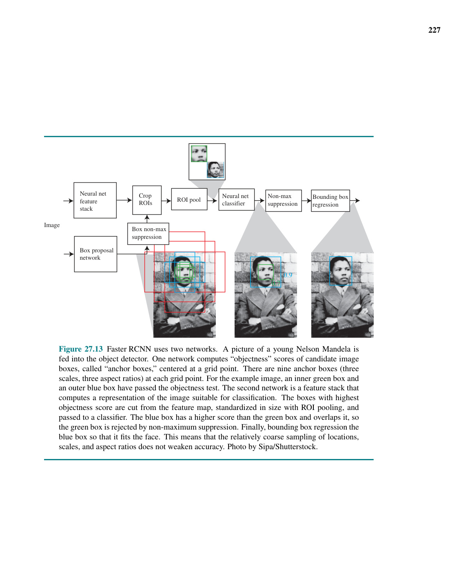
Hình 27.13 Faster RCNN sử dụng hai mạng lưới. Ảnh của Nelson Mandela lúc trẻ được nạp vào máy phát hiện đối tượng. Mạng thứ nhất tính toán điểm "objectness" (độ đậm đặc vật thể) của các ô chữ nhật ứng viên, gọi là "hộp neo" (anchor boxes), có tâm nằm tại một điểm lưới (grid point). Có tới chín hộp neo (3 tỷ lệ thu phóng, 3 tỷ lệ khung hình) tại mỗi điểm. Trong bức ảnh ví dụ, có một hộp xanh lá cây bên trong và một hộp xanh lam bên ngoài vượt qua được bài test objectness. Mạng thứ hai là một bộ tính toán đặc trưng nhằm tạo ra biểu diễn hình ảnh phù hợp cho việc phân loại. Những hộp có điểm objectness cao nhất được cắt ra khỏi bản đồ đặc trưng, chuẩn hóa kích thước bằng ROI pooling, và chuyển cho bộ phân loại (classifier). Hộp xanh lam có điểm cao hơn hộp xanh lá và che đè lên nó, nên hộp xanh lá bị loại bỏ bởi bước Ngăn chặn non-maximum (non-maximum suppression). Cuối cùng, hộp xanh lam được đem đi hồi quy (bounding box regression) để nó ôm khít vào khuôn mặt. Tóm lại, việc lấy mẫu hơi thô về vị trí, thu phóng và tỷ lệ khung hình ban đầu sẽ không làm yếu đi độ chính xác cuối cùng của hệ thống. Ảnh do Sipa/Shutterstock chụp.
Hình ảnh cho ta thấy một bức tranh 2D của một thế giới 3D. Nhưng bức tranh 2D này lại phong phú các manh mối về thế giới 3D đó. Một kiểu manh mối xuất hiện khi ta có nhiều bức ảnh chụp cùng một cảnh vật, và có thể so khớp các điểm ảnh giữa các bức ảnh với nhau. Một kiểu manh mối khác lại có thể thu được ngay từ một bức ảnh duy nhất.
Có hai bức ảnh chụp các vật thể trong không gian 3D thì luôn tốt hơn là một, vì vài lý do:
Bài toán mấu chốt là phải xác định được điểm nào trong ảnh thứ nhất khớp với điểm nào trong ảnh thứ hai. Các biểu diễn chi tiết về diện mạo cục bộ của một điểm bằng các đặc trưng họa tiết đơn giản (như ở Mục 27.3.2) thường là đủ để so khớp. Ví dụ, trong bức ảnh chụp giao thông trên đường, nếu chỉ có duy nhất một cái đèn xanh lá hiển thị trong cả hai bức ảnh, ta có thể đặt giả thuyết chúng tương ứng với nhau. Hình học của các góc nhìn đa camera đã được hiểu cực kỳ rõ (dù rắc rối quá không tiện bàn ở đây). Lý thuyết này sinh ra những ràng buộc hình học về việc điểm nào ở ảnh này được phép khớp với điểm nào ở ảnh kia. Các ràng buộc khác có thể có được bằng cách lập luận về độ mượt mà của bề mặt tái tạo.
Có hai cách để lấy nhiều góc nhìn của một cảnh. Một là dùng hai camera hoặc hai con mắt (Mục 27.6.2). Hai là di chuyển camera (Mục 27.6.3). Nếu bạn có nhiều hơn hai góc nhìn, bạn có thể khôi phục cả không gian hình học của thế giới thực lẫn chi tiết về máy ảnh một cách cực kỳ chuẩn xác. Mục 27.7.3 sẽ bàn về một số ứng dụng của công nghệ này.
Hầu hết động vật có xương sống đều có hai mắt. Dù lý do hữu ích nhất là để dự phòng khi bị hỏng một mắt, nó còn trợ giúp nhiều bề khác. Đa số động vật săn mồi có mắt nằm hai bên đầu để mở rộng tối đa trường nhìn. Động vật ăn thịt (predators) thì lại có hai mắt nằm phía trước để có thể sử dụng khả năng Thị giác âm nổi (Binocular stereopsis) - tức sự cảm nhận chiều sâu bằng hai mắt. Hãy giơ hai ngón trỏ lên trước mặt, nhắm một mắt lại, và điều chỉnh sao cho ngón trước che khuất ngón sau trong tầm nhìn của con mắt đang mở. Bây giờ đổi mắt; bạn sẽ nhận thấy hai ngón tay đã bị dịch chuyển so với nhau. Sự xê dịch vị trí từ góc nhìn mắt trái sang mắt phải gọi là Sự khác biệt / Độ lệch (Disparity). Trong hệ tọa độ phù hợp, nếu ta xếp chồng ảnh mắt trái và ảnh mắt phải của một vật thể ở khoảng cách sâu nào đó, vật thể sẽ bị dịch chuyển theo phương ngang trên bức ảnh xếp chồng, và kích thước của độ lệch này tỉ lệ nghịch với chiều sâu. Bạn có thể thấy điều đó trong Hình 27.14, điểm gần nhất của kim tự tháp đã bị lệch sang trái trong góc nhìn bên phải, và lệch sang phải trong góc nhìn bên trái.
Để đo độ lệch, ta cần giải bài toán tương ứng — xác định xem với một điểm ở ảnh trái thì "đối tác" của nó ở ảnh phải là ai, miễn là chúng cùng là hình chiếu của một điểm thực ngoài đời. Quá trình này khá giống việc đo luồng quang học, và cách tiếp cận ngây ngô nhất cũng từa tựa như vậy. Chúng tìm các khối pixel bên trái và bên phải sao cho ăn khớp nhau thông qua hàm tổng bình phương sai số (như Mục 27.3.3). Các phương pháp tân tiến hơn thì sử dụng biểu diễn họa tiết chi tiết hơn (Mục 27.3.2). Trong thực tế, các thuật toán phức tạp sẽ khai thác thêm hàng loạt ràng buộc khác.
Giả sử ta đo được độ lệch (disparity), làm sao suy ra chiều sâu không gian? Ta sẽ cần tìm hiểu mối quan hệ hình học giữa chúng. Đầu tiên, xét trường hợp cả hai mắt (hoặc hai camera) cùng nhìn thẳng về phía trước với trục quang học song song với nhau. Mối quan hệ giữa camera phải và camera trái lúc này chỉ đơn thuần là một phép tịnh tiến dọc theo trục \(x\) một lượng \(b\) — gọi là đường cơ sở (Baseline). Ta có thể tái sử dụng công thức luồng quang học ở Mục 27.3.3, nếu ta coi đây là kết quả của vector tịnh tiến \(T\) hoạt động trong thời gian \(\delta t\), với \(T_x = b/\delta t\) và \(T_y = T_z = 0\). Độ lệch ngang và lệch dọc sẽ thu được từ các luồng quang học nhân với \(\delta t\), tức \(H = v_x \delta t\), \(V = v_y \delta t\). Sau khi thế biến, ta có kết quả \(H = b/Z, V = 0\). Nói cách khác, độ lệch ngang bằng với tỉ số giữa đường cơ sở và chiều sâu, còn độ lệch dọc bằng 0. Ta hoàn toàn có thể tính ra chiều sâu \(Z\) nếu biết đường cơ sở \(b\) và đo được độ lệch \(H\).
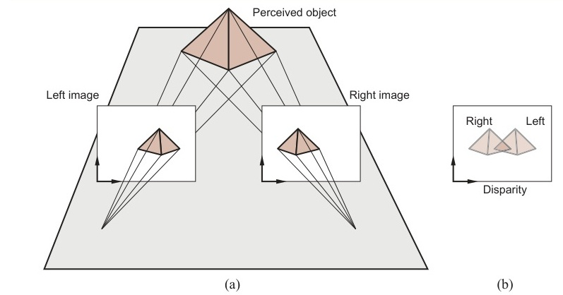
Hình 27.14 Di chuyển camera song song với mặt phẳng ảnh khiến các đặc trưng bị chạy qua lại trong mặt phẳng máy ảnh. Sự khác biệt (disparity) vị trí này là manh mối cho chiều sâu. Nếu ta xếp đè hai ảnh trái và phải lên nhau như hình (b), ta sẽ thấy độ lệch rõ rệt.
Trong điều kiện nhìn bình thường, con người phải Chăm chú (Fixate) — tức là có một điểm nào đó trong khung cảnh mà trục quang học của cả hai mắt cắt nhau tại đó. Hình 27.15 cho thấy hai mắt đang tập trung nhìn vào điểm \(P_0\), ở khoảng cách \(Z\) tính từ điểm giữa hai mắt. Để tiện lợi, ta sẽ tính độ lệch góc, đo bằng radian. Độ lệch tại đúng điểm hội tụ \(P_0\) là bằng không. Đối với một điểm \(P\) khác trong không gian nằm ở xa hơn \(\delta Z\), ta tính toán độ dịch chuyển góc của hình chiếu \(P\) vào mắt trái và phải, gọi là \(P_L\) và \(P_R\). Nếu mỗi hình chiếu này bị dịch một góc \(\delta\theta/2\) so với \(P_0\), thì tổng mức dịch chuyển giữa \(P_L\) và \(P_R\) — chính là độ lệch của điểm \(P\) — là \(\delta\theta\). Từ Hình 27.15: $$ \tan\theta = \frac{b/2}{Z} \quad \text{và} \quad \tan(\theta - \delta\theta/2) = \frac{b/2}{Z + \delta Z} $$ nhưng với góc nhỏ, \(\tan\theta \approx \theta\), nên $$ \delta\theta/2 = \frac{b/2}{Z} - \frac{b/2}{Z + \delta Z} \approx \frac{b\delta Z}{2Z^2} $$ Và vì độ lệch thực tế là \(\delta\theta\), ta có: $$ \text{disparity} = \frac{b\delta Z}{Z^2} $$ Ở con người, đường cơ sở \(b\) khoảng 6 cm. Nếu \(Z = 100 \text{ cm}\) và độ lệch góc nhỏ nhất con người nhận diện được là khoảng 5 giây cung, ta tính ra được \(\delta Z\) là 0.4 mm. Còn nếu vật ở khoảng cách \(Z = 30 \text{ cm}\), con số đó nhỏ đến kinh ngạc, \(\delta Z = 0.036 \text{ mm}\). Có nghĩa là ở cự ly 30 cm, con người phân biệt được các chiều sâu chênh lệch nhau chỉ 0.036 mm, cho phép ta xâu kim luồn chỉ dễ dàng.
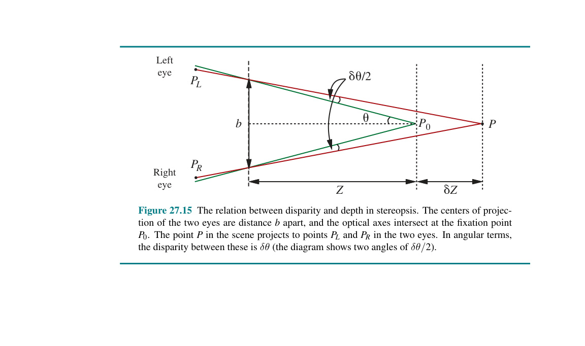
Hình 27.15 Mối liên hệ giữa độ lệch và chiều sâu trong thị giác hai mắt. Tâm chiếu của hai mắt cách nhau đoạn \(b\), và trục quang học cắt nhau tại điểm hội tụ \(P_0\). Điểm \(P\) chiếu thành \(P_L\) và \(P_R\). Tính theo góc, độ lệch giữa chúng là \(\delta\theta\).
Giả sử ta có một camera di chuyển trong một khung cảnh. Lấy lại Hình 27.14 và dán nhãn cho ảnh trái là "Thời điểm \(t\)", ảnh phải là "Thời điểm \(t+1\)". Hình học không gian hoàn toàn không đổi, nên mọi kiến thức ở phần thị giác hai mắt cũng áp dụng y nguyên cho trường hợp máy ảnh dịch chuyển. Thứ ta gọi là độ lệch (disparity) giờ đổi tên thành chuyển động bề kiến trong ảnh, hay còn gọi là luồng quang học (optical flow). Đây là một bầu sữa thông tin cho cả chuyển động của camera lẫn cấu trúc hình học của cảnh quan. Để hiểu điều này, ta đưa ra một phương trình (không thèm chứng minh) liên hệ giữa luồng quang học với vận tốc tịnh tiến \(T\) của người quan sát và chiều sâu của không gian.
Trường vector luồng quang học là trường các vận tốc trên ảnh \((v_x(x,y), v_y(x,y))\). Các biểu thức cho các thành phần này, trong hệ tọa độ lấy tâm là máy ảnh và cho tiêu cự \(f=1\), là: $$ v_x(x,y) = \frac{-T_x + x T_z}{Z(x,y)} $$ và $$ v_y(x,y) = \frac{-T_y + y T_z}{Z(x,y)} $$ trong đó \(Z(x,y)\) là tọa độ \(z\) (tức chiều sâu) của điểm thực tế trong khung cảnh tương ứng với pixel ảnh tại \((x,y)\).
Lưu ý là cả hai thành phần luồng quang học \($v_x$\) và \($v_y$\) đều sẽ bằng không tại điểm \(x = T_x/T_z, y = T_y/T_z\). Điểm này gọi là Tâm nở rộng (Focus of expansion) của trường vector quang học. Nếu ta dời gốc tọa độ mặt phẳng \(x-y\) vào ngay cái tâm điểm nở rộng này, phương trình luồng sẽ trở nên siêu gọn nhẹ. Gọi \((x', y')\) là tọa độ mới định nghĩa bởi \(x' = x - T_x/T_z\), \(y' = y - T_y/T_z\). Khi đó: $$ v_x(x',y') = \frac{x' T_z}{Z(x',y')} $$ $$ v_y(x',y') = \frac{y' T_z}{Z(x',y')} $$
Ghi chú là ở đây có một sự mơ hồ về tỷ lệ (đấy là lý do tại sao ta phang luôn tiêu cự \(f=1\) mà chả hại ai). Nếu camera phi nhanh gấp đôi, đồng thời mọi đồ vật trong cảnh cũng phình to gấp đôi và nằm xa máy ảnh gấp đôi, thì trường luồng quang học thu được vẫn y xì đúc không đổi mảy may. Tuy vậy, ta vẫn moi được thông tin giá trị:
Ngay cả một bức ảnh cô đơn cũng ngập ngụa thông tin về không gian 3D, bất kể nó chỉ là một bức phác thảo trắng đen. Hình vẽ phác thảo vô cùng hấp dẫn với giới khoa học thị giác, vì con người vẫn có thể cảm nhận không gian và kết cấu 3D cực tốt từ một bản vẽ sơ sài, mặc dù bản vẽ đó chứa quá ít thông tin để chọn lọc giữa hàng nghìn cấu trúc có thể tạo ra chung một nét vẽ đó. Sự che khuất (Occlusion) là chìa khóa: nếu bức tranh hé lộ một vật đè lên vật khác, thì cái vật đè lên 100% nằm gần mắt ta hơn.
Trong ảnh thực tế, họa tiết là manh mối đắt giá. Theo Mục 27.3.2, họa tiết là những hình lặp đi lặp lại của texel. Dù mật độ texel rải đều trên không gian thực — ví dụ đám đá cuội trên bãi biển — nhưng chúng chả bao giờ rải đều trên mặt phẳng ảnh: viên đá xa nhìn nhỏ xíu, viên gần thì chà bá. Một ví dụ khác là tấm vải chấm bi. Mọi nốt chấm bi đều tròn và to như nhau trên mặt vải, nhưng lên ảnh góc phối cảnh, có chấm lại bẹp rúm thành elip vì bị rút ngắn (foreshortening). Hiện nay người ta thường cho AI tự học ánh xạ từ ảnh sang không gian 3D (Mục 27.7.4) thay vì bẻ cổ ngồi tính toán phương trình toán học của họa tiết.
Đổ bóng (Shading) — sự đậm nhạt cường độ ánh sáng hắt lại từ các mảng trên bề mặt cảnh vật — được định đoạt bởi hình học của cảnh quan và bởi chất liệu hắt sáng của bề mặt. Bằng chứng thép cho thấy bóng đổ là "chim lợn" báo hiệu hình dáng 3D. Lý luận vật lý rất đơn giản. Từ Mục 27.2.4 ta biết nếu pháp tuyến bề mặt chĩa mặt vào nguồn sáng, nó sáng; ngoảnh mặt đi thì nó tối. Cú lừa xuất hiện nếu bề mặt có chất liệu lạ, và ánh sáng vương vãi lộn xộn, nhưng mắt người bằng một phép thuật nào đó vẫn moi ra được hình dáng từ những đốm bóng tối kia. Đáng bực là chúng ta hiểu rất ít về thuật toán để mô phỏng điều này.
Nếu trong hình lòi ra một vật thể quen mặt, thì dáng vẻ của nó phụ thuộc nặng nề vào Tư thế (Pose), tức là vị trí và phương hướng của nó so với người xem. Có hàng tá thuật toán cơ bản để tính ngược lại tư thế nhờ vào việc đối chiếu các điểm trên vật thể thật với các điểm trên mô hình mẫu của nó. Ứng dụng của việc tính tư thế rất nhiều. Trong công nghiệp, cánh tay robot chả làm ăn gì được nếu chưa phán chuẩn tư thế cục phôi sắt. Robot phẫu thuật thì sống chết dựa vào việc tính toán khoảng cách góc độ giữa camera với công cụ mổ và bệnh nhân.
Mối quan hệ không gian giữa các đồ vật là manh mối cốt tử khác. Giả thử: Mọi người đi bộ đều cao xấp xỉ nhau, và đều dẫm chân lên cùng một mặt đất. Nếu ta dò ra được đường chân trời trong ảnh, ta tha hồ mà xếp hạng những người trong ảnh xem ai ở gần camera nhất. Ai gác chân càng gần đường chân trời thì càng ở xa tít mù khơi, và càng phải bé tẹo trên ảnh. Có nghĩa là ta có thể xóa sổ hàng loạt rác từ mấy cái máy dò: nếu máy dò báo tìm thấy một ông rõ to nhưng chân lại đạp gần đường chân trời, thì gã đó đích thị là Người Khổng Lồ Xanh; mà khổng lồ thì không có thật, nên máy dò đã nói láo. Ngược lại, một máy dò người đáng tin cậy cũng đủ sức đoán ngược lại xem đường chân trời nằm phương nào, nếu nó bốc được vài người đang đi dạo ở khoảng cách xa gần xen kẽ.
Sau đây ta sẽ lướt qua hàng loạt ứng dụng của thị giác máy tính. Thị trường đang ngập tràn các bộ công cụ nhận diện nhãn quan sắc nét, khiến các ứng dụng đạt được thành tựu vô tiền khoáng hậu. Dân chơi tự làm (enthusiasts) chế tác đủ thứ đồ chơi bằng công nghệ này ở nhà cũng chứng tỏ công nghệ này đã bình dân hóa và phổ cập cỡ nào. (Ví dụ có thanh niên rảnh rỗi chế cái cửa tự động cho thú cưng, nhất quyết từ chối cho con mèo bước vào nhà nếu camera thấy nó ngậm chuột chết — search web là ra ngay).
Nếu ta đúc được một cỗ máy biết xem video và am hiểu loài người đang giở trò gì, ta có thể tạo ra các giao diện người-máy tương tác dựa trên hành vi con người. Nhờ đó ta có thể: thiết kế đô thị công cộng tốt hơn nhờ dữ liệu thu thập hành vi người dân; chế tạo hệ thống camera an ninh thông minh bớt dòm ngó can thiệp; đẻ ra bình luận viên thể thao ảo; làm công trường bớt chết người bằng cách hú còi nếu công nhân xáp vô cỗ máy nghiền quá gần; làm game máy tính lùa người chơi chạy tóe khói quanh nhà; hay tự tắt đèn tắt điều hòa tiết kiệm điện khi phòng vắng tanh.
Với vài bài toán thì đỉnh cao công nghệ hiện đã quá đẳng cấp. Ta thừa sức tiên đoán tọa độ 100% khớp với các khớp xương người trong ảnh. Từ đó suy ra cấu hình 3D của hình dáng cơ thể nhẹ tựa lông hồng (xem Hình 27.16). Đỉnh cao này làm được là do ảnh chụp người thường ít bị bóp méo phối cảnh, và các đoạn tay chân cũng chả dãn ra co vào được, nên độ ngắn lại của cánh tay trong ảnh 2D là manh mối tuyệt trần chỉ ra góc ngửa của nó với ống kính. Nếu nạp thêm cảm biến chiều sâu (depth sensor), tốc độ xử lý nhanh lướt sóng dư sức đẩy vào các máy chơi game.
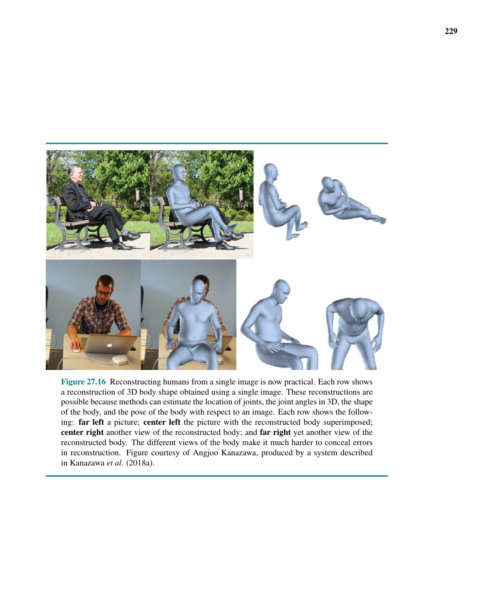
Hình 27.16 Tái tạo thân thể người từ ảnh 2D duy nhất đã là hiện thực. Mỗi hàng mô tả hình dáng 3D bóc trần từ ảnh. Làm được vầy là do thuật toán tính được khớp, góc khớp 3D, đường cong cơ thể, và tư thế của họ với ống kính. Hàng trái cùng là ảnh thật; cạnh trái là lồng ghép 3D đè lên; hai bên phải là mô hình 3D từ các góc nhìn lạ lẫm khác. Việc lật mô hình sang các góc quay khác khiến thuật toán không thể "giấu dốt" sai lầm. Ảnh của Angjoo Kanazawa, chạy bằng thuật toán của Kanazawa et al. (2018a).
Nhưng phân loại người đang làm trò gì thì đau đớn hơn. Những video quay các môn thể thao có tính khuôn phép khắt khe như múa ba lê, thể dục dụng cụ hay Thái Cực Quyền (chỗ mà người ta có cả 1001 từ khóa rõ ràng mô tả từng cử động trên cái phông nền sạch bách) thì khá ngon ăn. Chỉ cần nạp núi dữ liệu dán nhãn là mạng nơ-ron nuốt trôi ngay. Nhưng khổ nỗi, rất khó để chứng minh rằng phương pháp này thực sự "hiểu" gì sất, bởi nó lệ thuộc điên cuồng vào ngữ cảnh. Tỉ như cái máy chuyên bóc phốt các pha "bơi lội", biết đâu nó chỉ là một cái "máy dò bể bơi", và ném nó ra sông hồ là nó ngậm ngùi im bặt.
Nhiều bài toán "bá đạo" khác vẫn đang bế tắc — ví dụ như làm sao nối chuỗi các cử chỉ chân tay và chổi quét nhà thành một suy luận rành mạch về mục tiêu và ý định của con người đang di chuyển. Vấn đề là: hành động nhìn hao hao giống nhau nhưng lại khác nhau, và hành động khác nhau nhưng nhìn lại như anh em sinh đôi (Hình 27.17).
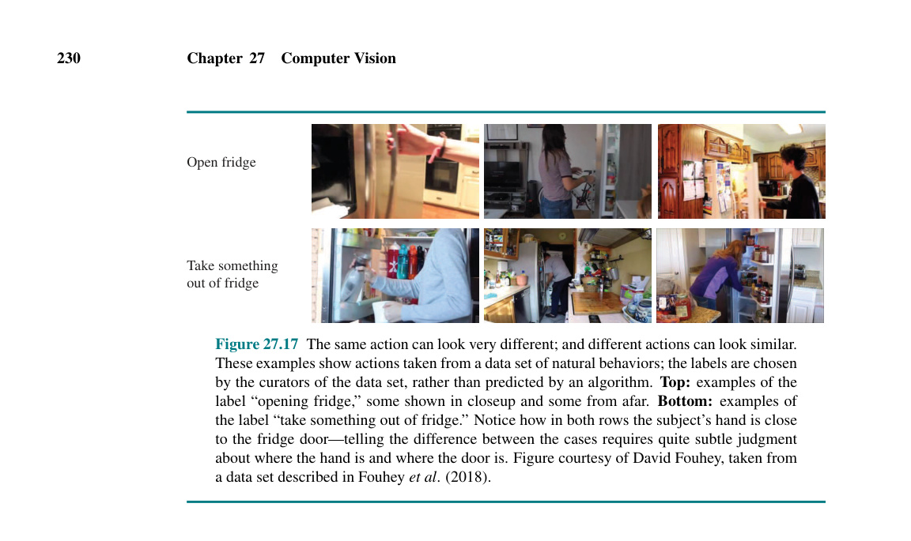
Hình 27.17 Hành động giống nhau nhưng nhìn khác nhau; khác nhau nhưng lại nhìn cực kỳ giống nhau. Ở đây là dữ liệu về những hành vi diễn ra thường ngày do người ta tự đánh nhãn thủ công chứ không phải AI dán nhãn. Hàng trên: "đang mở tủ lạnh", có lúc quay sát rạt có lúc quay góc xa. Hàng dưới: "đang bới đồ trong tủ lạnh". Cú lừa ở đây là dù là mở tủ hay lấy đồ thì cái tay vẫn thò vào y chỗ cánh tủ — để AI khôn ngoan phân chia rạch ròi đòi hỏi nó phải tinh tế xét xét xem tay nằm đâu so với mép tủ lạnh. Ảnh của David Fouhey.
Lại thêm quả rắc rối liên quan tới thang đo thời gian. Cùng một chuyện nhưng gọi tên là gì còn tùy bạn lướt xem bao lâu (Hình 27.18). Thêm vào đó, hành vi còn mang đặc tính "tổ hợp" (composes) — nhiều chiêu lẻ tẻ cộng gộp lại thành một kỹ năng tối thượng như làm bữa ăn nhẹ.
Và chuyện sẽ thế nào nếu ai đó vừa hát véo von vừa nấu mì? Đau đầu là ở chỗ chúng ta làm gì có một bộ từ vựng xài chung cho ba cái mẩu hành vi vụn vặt đó. Chém gió thì bảo ai chả liệt kê được tên các trò người ta hay làm, nhưng cứ thử vác giấy bút ra liệt kê 1 vạn hành động xem, nghẹn ngay. Dẫn đến việc lập một tệp dữ liệu được dán nhãn nhất quán về các hành vi là điều xa xỉ.
Các bộ học sâu AI chỉ ngoan ngoãn hoạt động nếu tệp tài liệu huấn luyện và dữ liệu bài thi được bốc ra từ chung một kho. Ở mảng phân loại đồ vật, dù không cách gì kiểm tra chắc chắn rào cản này, nhưng thực tế chạy ngoài đời vẫn thấy rất tín. Cơ mà áp vô phân loại hành vi người, chênh lệch giữa trường đào tạo và ra đời đi làm thì khó nuốt trôi, vì con người có 10 vạn trò chơi ở 10 vạn bối cảnh khác nhau. Tỉ như bộ phận dò tìm người đi bộ dẫu chạy siêu chuẩn trên bộ dữ liệu đường phố. Thì lâu lâu cũng tòi ra quả dị nhân (như đám thanh niên leo xe đạp một bánh vác loa kẹo kéo) chưa bao giờ ngoi mặt trên ghế nhà trường đào tạo của con AI, và đố ai biết con AI sẽ khạc ra kết quả gì. Bài toán nan giải nhất là chứng minh hệ thống dò đường của bạn an toàn miễn nhiễm với mọi hành vi hâm dở của con người, điều mà lý thuyết máy học hiện tại phải khoanh tay đầu hàng.
Mạng internet ngập lụt video và ảnh chế. Cái cay đắng là kiếm lại tấm ảnh mình cần. Đa số mọi người gõ chữ để tìm ảnh (chứ ai rảnh đâu mà vẽ lại cái ảnh đó rồi ném vào ô search). Vì ảnh chả tự mọc ra chữ đính kèm, dân tình vắt óc chế ra hệ thống Gắn thẻ (Tagging systems) gán chữ vào ảnh. Cỗ máy chạy ngầm bên dưới chả có gì phức tạp — cứ bê phân loại ảnh và nhận diện vật thể vào rồi phun bọt mép ra một rổ từ khóa là xong. Nhưng thẻ tag thì chả lột tả nổi cái hồn của bức ảnh. Chụp tấm ảnh thì quan trọng là ai đang làm gì, chứ ném một rổ nhãn vào ảnh một con mèo chạy nhong nhong: "con mèo", "con đường", "thùng rác", "xương cá", người ta chẳng thể hình dung nổi cảnh con mèo đang lôi bộ xương cá từ cái thùng rác trên đường.
Đổi món, ta xây dựng Hệ thống thuyết minh ảnh (Captioning systems) — hệ thống nặn ra một hay nhiều câu văn mô tả ảnh. Đồ nghề dưới gầm máy vẫn thô sơ — chắp nối một mạng nơ-ron tích chập (để nuốt hình ảnh) với một mạng recurrent neural network hoặc transformer (để rặn ra câu văn), rồi ném mồi là 1 đống ảnh-có-sẵn-chú-thích vào để dạy dỗ. Hình ảnh đầy rẫy trên mạng, người ta vắt kiệt sức lao động con người để chèn thêm caption tạo sự phong phú văn chương. Ví dụ bộ COCO lẫy lừng gom hơn 200 ngàn ảnh với mồi 5 câu thuyết minh cho mỗi tấm.
Thuyết minh ảnh thời nay dùng máy dò moi ra một lô từ khóa, rồi vứt cho mô hình ngôn ngữ nặn thành câu. Mấy tay to nhất thường cày nát não lọc toàn bộ những câu mà mô hình có thể đẻ ra để chọn ra phương án mượt nhất, đánh đổi bằng tốc độ rùa bò. Câu văn chấm điểm bằng (a) cụm từ đó có lặp lại nhiều lần trong ground truth do người chế không, (b) đừng xài mấy cụm từ vớ vẩn. Ba cái hàm chấm điểm lằng nhằng này chả xài làm hàm loss (loss function) được, nên máy học tăng cường (reinforcement learning) nhảy vào kiếm suất đào tạo cày điểm siêu cao. Nếu xui rủi mà trong tệp bài giảng có câu caption trùng từ vựng với ảnh bài thi test, con AI lươn lẹo sẽ copy y chang câu đó nộp bài thay vì nhọc công bịa câu mới. Vì thế, caption của AI có quả xuất thần nức nở, có quả thì làm trò cười cho thiên hạ (xem Hình 27.19).
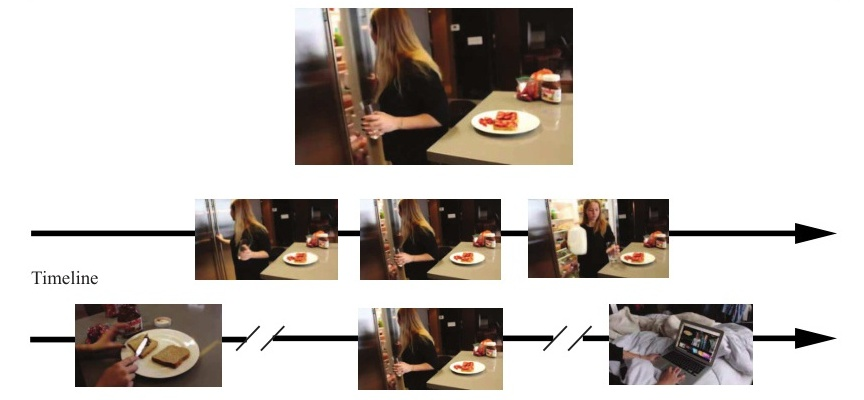
Hình 27.18 Tên gọi hành động biến thiên theo độ dài thước phim. Khung hình đơn độc ở trên cùng chuẩn nhất là "đang mở tủ lạnh" (chả ai dán mắt vào đống đồ ăn lúc đóng cửa tủ). Nhưng nếu kéo dài ra 1 đoạn video ngắn (3 khung hình ở giữa), nó trở thành "đang lấy sữa từ tủ lạnh". Cứ thế nối dài ra (hàng dưới cùng), thao tác chuyển mình thành "đang làm bữa ăn nhẹ". Điều này cho thấy hành vi được "tổ hợp" ra sao: móc sữa từ tủ là khâu nhỏ của làm bữa ăn nhẹ, và mở cửa tủ lại là khâu nhỏ của móc sữa. Ảnh của David Fouhey.
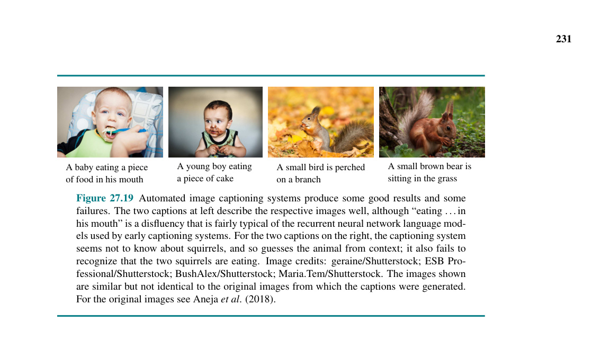
Hình 27.19 Máy thuyết minh hình tự động sản xuất ra cả siêu phẩm lẫn thảm họa. Hai bức ảnh bên trái có caption cực khớp dẫu câu cú hơi bị lố "đang ăn... trong miệng" - cái tật dở hơi điển hình của mạng ngôn ngữ hồi quy (RNN) cổ lỗ. Còn hai bức bên phải, máy tính có vẻ mù tịt về giống sóc, nên bói mù qua ngữ cảnh xung quanh; nó cũng mù nốt cả việc nhận diện lũ sóc đang ăn. (Chú thích ảnh: Đứa trẻ đang ăn thức ăn trong miệng / Cậu bé nhỏ đang ăn bánh / Một con chim nhỏ đang đậu trên cành / Một con gấu nâu nhỏ đang ngồi trên bãi cỏ).
Mấy con bot viết caption giấu dốt bằng cách lơ đẹp mấy thứ chúng chả rõ hoặc đoán mò dựa vào ngữ cảnh. Chúng cực kỳ lóng ngóng vụ nhận diện giới tính con người, nên toàn bói bừa dựa trên bảng thống kê dữ liệu đào tạo. Thành ra lỗi nhan nhản — đàn ông cũng mê mua sắm và phụ nữ cũng quẩy ván tuyết ầm ầm cơ mà. Một cách hay để test xem bot có "não" thật hay không là dồn nó vào chân tường bắt nó trả lời câu hỏi vặn vẹo về ảnh. Hệ thống đó gọi là Hỏi đáp hình ảnh (Visual question answering - VQA). Thêm một món ăn chơi khác là Đoạn hội thoại hình ảnh (Visual dialog system), ném cho nó cái ảnh, caption, và đoạn chat dở dang, bắt nó thả vào câu chat tiếp theo hợp tình hợp lý. Nhưng chao ôi, như Hình 27.20 đã tố giác, mảng thị giác chông gai hơn chữ "khó" nhiều, và mấy cái máy VQA vẫn chuyên gia đoán mò sai bét nhè.
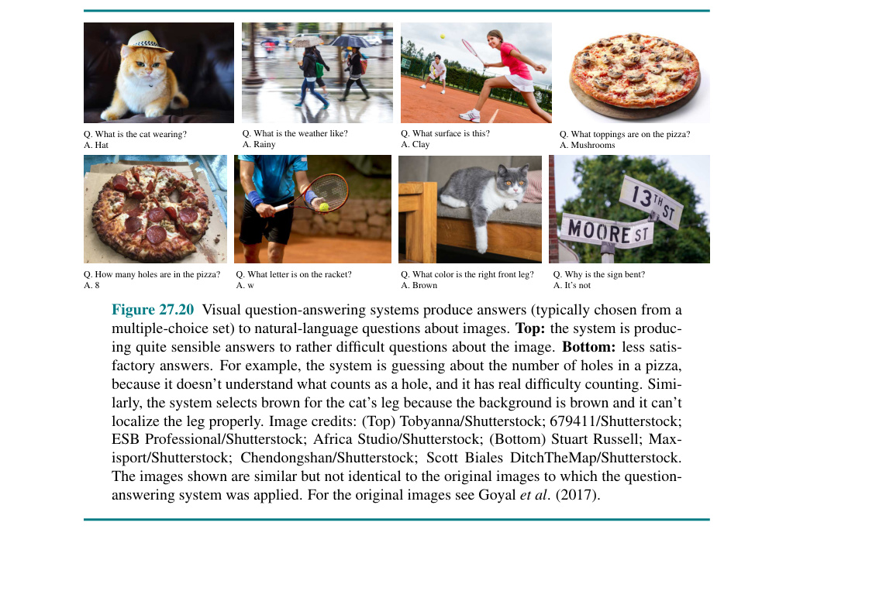
Hình 27.20 Máy hỏi đáp hình ảnh (VQA) phun câu trả lời (thường trắc nghiệm) cho những câu hỏi ngẫu nhiên bâng quơ bằng ngôn ngữ tự nhiên. Phần trên: con bot trả lời đi vào lòng người cho mấy câu hỏi tương đối quái thai. Phần dưới: trả lời mù mắt. Ví dụ nó phải đếm lỗ trên cái bánh pizza vì nó chả hiểu cái gì gọi là "lỗ" (hay là "miếng"), và trình đếm của nó cùi bắp. Tương tự, nó đồn chân con mèo màu nâu vì phông nền đằng sau màu nâu và nó ngáo ngơ không bóc được ranh giới cái chân mèo nằm ở đâu.
Việc tái tạo một nhóm điểm ảnh từ vô số góc nhìn — ví dụ như bóc tách từ video hay từ một rổ ảnh chụp lộn xộn của khách du lịch — nghe thì giống kỹ thuật tái tạo từ hai góc nhìn, nhưng có một số khác biệt chí mạng. Sẽ tốn vô khối công sức để dò tìm các điểm tương ứng xuyên qua vô số góc nhìn khác nhau, và các điểm có thể thoắt ẩn thoắt hiện, khiến trò chơi chắp nối và tái tạo này lộn xộn hơn hẳn. Bù lại, càng nhiều góc nhìn đồng nghĩa với càng nhiều ràng buộc chéo cho cả quá trình tái tạo lẫn việc lấy lại các thông số góc nhìn, do đó thường thì ta dư sức tính ra tọa độ không gian điểm cực chuẩn và lấy lại tham số camera sắc nét. Đại khái thì quy trình tái tạo bắt đầu bằng việc khớp các điểm giữa từng cặp ảnh, nhân rộng các cặp khớp này lên thành một mớ ảnh bòng bong, chốt tạm một đáp án sơ sài cho cả khung hình học và thông số camera, rồi đi chuốt lại đáp án đó. Chuốt lại (polishing) ở đây nghĩa là phải giảm thiểu sự sai lệch giữa vị trí điểm ảnh do mô hình tiên đoán và vị trí thực tế tìm thấy trên ảnh. Đi sâu vào chi tiết thì nó phức tạp đến mức khỏi bàn ở đây, nhưng tựu trung là giới khoa học đã hiểu thấu đáo và hệ thống chạy rất tín.
Mọi ràng buộc hình học cho trò đối chiếu chéo này đều đã được lật bài ngửa cho gần như bất cứ loại camera khả thi nào. Các thuật toán đủ độ dẻo dai để nhai tốt mấy cái ảnh không phải ảnh trực giao; cân cả những điểm chỉ chớp nhoáng xuất hiện trên một số ảnh; chấp luôn mấy camera mù tịt thông số (như tiêu cự); và biết xài xảo thuật tìm kiếm để móc ra những điểm khớp hoàn hảo. Việc xây dựng mô hình 3D chuẩn từng milimet cho cả một thành phố từ các bức ảnh giờ đã là chuyện làm hàng ngày. Một vài ứng dụng tiêu biểu:
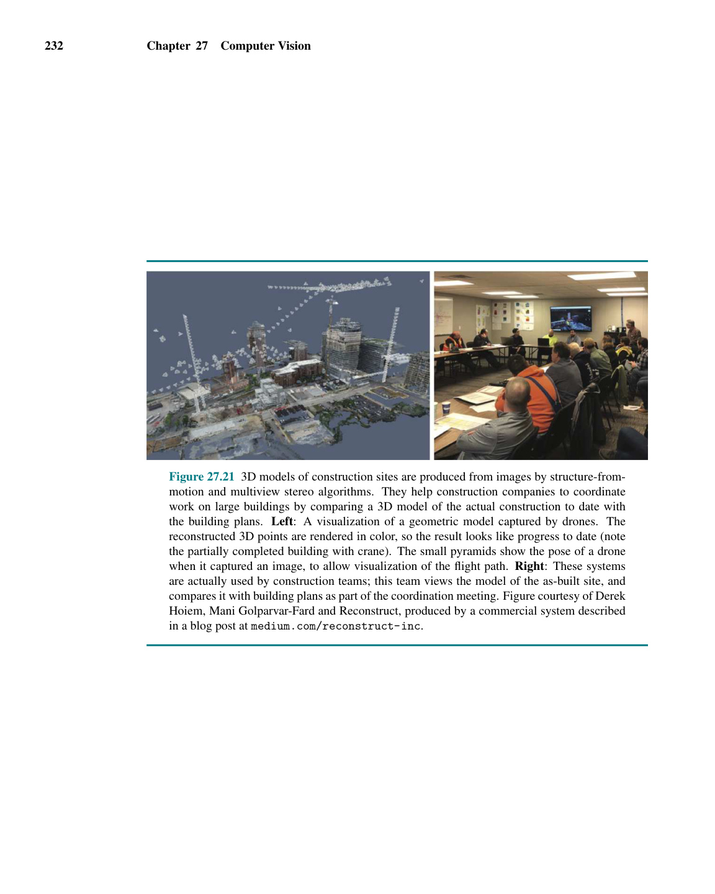
Hình 27.21 Mô hình 3D của các đại công trường được nặn ra từ hình ảnh nhờ thuật toán structure-from-motion và multiview stereo. Chúng phụ giúp các nhà thầu chắp vá tiến độ xây dựng bằng cách ốp mô hình 3D thực trạng đè lên bản vẽ kỹ thuật. Trái: Chế độ nhìn xuyên thấu mô hình quét bởi drone. Các điểm 3D được tô màu, tái hiện chân thực tiến độ thực tại (để ý cái tòa nhà đang xây dở và cái cần cẩu). Mấy cái chóp nhọn bé xíu vạch mặt tọa độ drone mỗi khi nó chụp một bức ảnh, vạch ra luôn cả quỹ đạo bay. Phải: Đội kỹ sư thực sự dùng hệ thống này; họ dán mắt vào mô hình as-built (hoàn công) lôi ra so mâm với bản vẽ kiến trúc ngay trong buổi họp phối hợp thi công. Hình của Derek Hoiem, Mani Golparvar-Fard và Reconstruct.
Các biểu diễn không gian hình học là bảo bối nếu bạn muốn xê dịch đi lại, vì chúng chỉ điểm bạn đang đứng đâu, có thể lết tới đâu, và sắp sửa đâm sầm vào thứ gì. Nhưng không phải lúc nào vác nhiều góc nhìn ra để build mô hình cũng là thượng sách. Tỉ như khi bạn xô cửa lạch bạch bước vào phòng, hai mắt bạn quá sát nhau để kịp lôi ra một cái bản đồ chiều sâu xịn xò cho mấy đồ vật tuốt bên kia góc phòng. Bạn có thể lắc lư cái đầu như chong chóng để lấy góc nhìn, nhưng thế thì vừa tốn thời gian vừa dở hơi.
Một phương án thay thế là tiên đoán ra Bản đồ độ sâu (Depth map) — một mảng dữ liệu tính chiều sâu cho từng pixel trên ảnh, tính từ vị trí máy ảnh — bằng cách chỉ nhìn lướt đúng một bức ảnh. Với vô vàn cảnh quan, trò này nghe chừng khó nhưng thực tế làm lại dễ ợt và cực chuẩn, vì cấu trúc chiều sâu vốn dĩ khá đơn giản. Nó đặc biệt ngon ăn với nội thất trong phòng. Cơ chế đằng sau chả có gì phức tạp. Ta hốt một kho dữ liệu ảnh đính kèm bản đồ chiều sâu chuẩn, sau đó luyện một mạng nơ-ron chuyên bắt bệnh bản đồ chiều sâu từ ảnh. Một rổ các bài toán râu ria thú vị khác cũng đứt gánh ở đây. Cơ mà điểm yếu của bản đồ chiều sâu là nó tịt ngòi không soi được mặt sau của vật thể, hay cái mảng không gian bị giấu nhẹm sau lưng vật thể. Tuy nhiên, dân chơi cũng đẻ ra thuật toán đoán được luôn voxel (pixel phiên bản 3D) nào bị đồ vật bành trướng chiếm đóng (nếu biết trước hình thù vật thể đó) và cái bản đồ độ sâu sẽ thay da đổi thịt ra sao nếu ta tiện tay bứng luôn vật đó đi (nhờ đó moi ra được các khe hở lấp lố để nhét đồ). Trò này xài ngon vì hình dáng các vật thể vốn hay lặp đi lặp lại một vài form quen thuộc.
Như đã bàn ở Mục 27.6.4, tính ngược tư thế của một đồ vật quen mặt nếu cầm trong tay mô hình 3D của nó thì dễ ợt. Giờ hãy tưởng tượng bạn chằm chằm nhìn vào bức ảnh một con chim sẻ. Nếu cả đời bạn đã soi hằng hà sa số ảnh lũ chim sẻ, bạn thừa sức nặn ra một phác thảo cực kỳ hợp lý cho cả tư thế lẫn vóc dáng 3D của con chim trong bức ảnh đó. Chắt lọc từ đống ảnh quá khứ, bạn đúc ra một bộ khung mô hình học với các tham số đo ni đóng giày cho dòng dõi chim sẻ; sau đó xài thuật toán tối ưu hóa để săn ra bộ tham số cùng góc độ nhìn hoàn mỹ nhất hợp thức hóa cái thứ hiện ra trong bức ảnh. Thậm chí xảo thuật này còn phủ luôn bộ lông kết cấu hoa văn cho nó, đắp cả vào những mảng khuất mà mắt camera chịu chết (Hình 27.22).
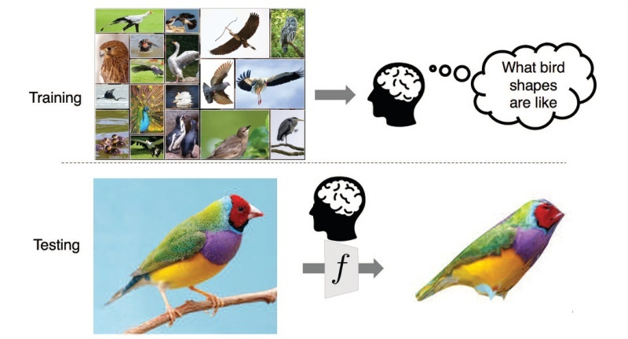
Hình 27.22 Nếu bạn nhồi sọ đủ một rổ ảnh về một giống nào đó — ví dụ các loài chim (trên) — bạn có thể đúc ra tái tạo 3D chỉ từ một bức ảnh lạ hoắc duy nhất (dưới). Tất nhiên phải giữ mồm giữ miệng đảm bảo tụi nó xấp xỉ nhau về hình thể (chớ đem ảnh đà điểu đi gò chim sẻ), nhưng đừng lo, mấy bộ phân loại AI dư sức chia bè kết phái vụ này. Từ đống ảnh gốc đó, bạn có thể đoán bệnh xem họa tiết phủ lên thân chim phân bổ ra sao, và thế là tự tin tô màu (texture) kín mít cả những bộ phận chim chưa bị camera lột trần bao giờ (dưới). Ảnh của Angjoo Kanazawa.
Ngày nay, nhét một cái đồ họa máy tính 3D vào một bức ảnh chụp là trò vặt mà lại trông y như thật, tựa như Hình 27.23, một bức tượng chễm chệ chèn vào giữa bức ảnh cái phòng. Khâu đầu tiên là ước lượng bản đồ chiều sâu và độ phản xạ ánh sáng (albedo) cho bức ảnh. Kế tiếp bói ra thông số ánh sáng bằng cách so kèo với vài bức ảnh khác đã bị bóc trần thông số sáng. Rồi thả cái vật thể 3D vào bản đồ chiều sâu đó, và xài một tool render mô phỏng vật lý đồ họa siêu kinh điển để xuất xưởng bức ảnh tổng hợp. Công đoạn chót là nhào lộn làm mịn ảnh chế đè lên ảnh gốc.
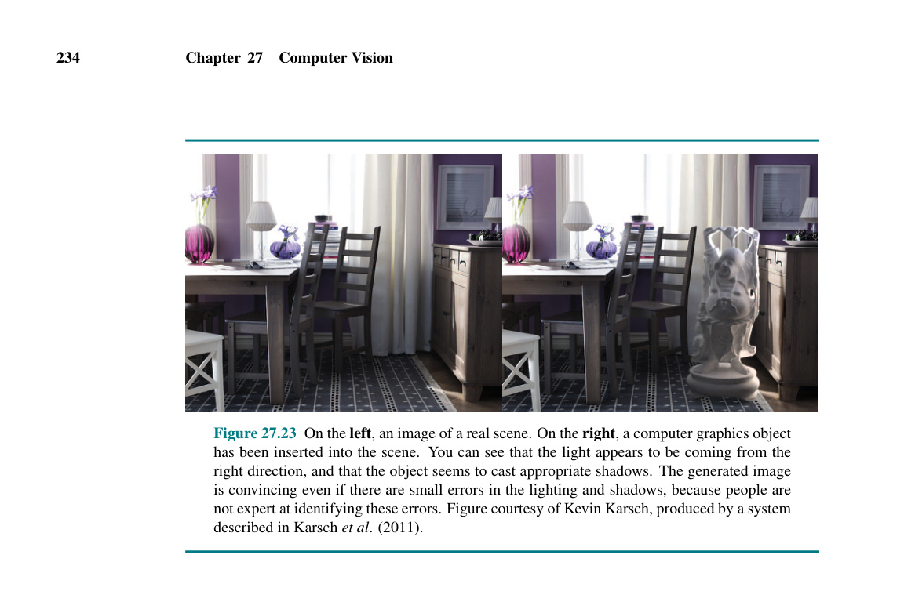
Hình 27.23 Bên trái là ảnh chụp đời thực. Bên phải là một pho tượng ảo được "xuyên không" thả vào bức ảnh. Bạn có thể liếc thấy ánh sáng đánh lừa thị giác cứ như chiếu từ bên phải qua, và pho tượng cũng ngoan ngoãn ngả bóng đen như thật. Bức ảnh chế đủ sức qua mặt mọi người dẫu cho vụ ánh sáng đổ bóng có thể tòi ra vài hạt sạn lỗi li ti, đơn giản vì người trần mắt thịt chẳng ai đủ tinh đời để vạch lá tìm sâu mấy cái lỗi nhỏ nhặt đó. Ảnh của Kevin Karsch.
Mạng nơ-ron cũng có thể bị lôi ra cày cuốc nhiệm vụ Biến đổi hình ảnh (Image transformation): nhào nặn ảnh từ kiểu X — chẳng hạn ảnh mờ tịt; ảnh chụp vệ tinh thành phố; hay bản vẽ phác thảo sản phẩm — lột xác thành ảnh kiểu Y — ví dụ ảnh nét căng; bản đồ đường giao thông; hay ảnh studio chụp sản phẩm thật bóng loáng. Trò này dễ xơi nhất nếu tệp huấn luyện nạp sẵn các cặp ảnh (X, Y) kề vai bá cổ — như ở Hình 27.24, mỗi cặp gồm một cái ảnh chụp vệ tinh đi kèm với một mảnh bản đồ đường vẽ sẵn. Hàm đánh giá (loss) sẽ soi cái ảnh do mạng nặn ra với cái ảnh chuẩn, rồi vả thêm hàm loss từ Mạng sinh đối nghịch (Generative adversarial network - GAN) để đảm bảo chất lượng sản phẩm xuất xưởng vẫn mang linh hồn của đặc trưng kiểu Y. Như kết quả bài thi cuối ở Hình 27.24, các cỗ máy dạng này quẩy tung chảo với thành tích siêu đỉnh.
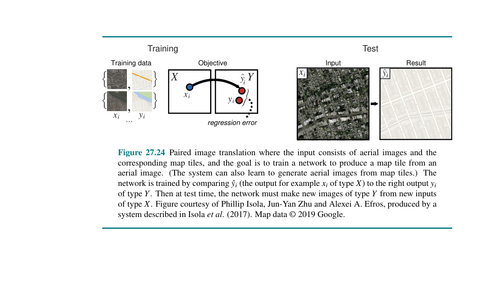
Hình 27.24 Dịch ảnh bắt cặp (Paired image translation) nơi nguyên liệu là ảnh chụp trên cao và đồ án bản đồ đính kèm, mục tiêu là luyện một con mạng đúc ra bản đồ từ một tấm ảnh vệ tinh thô. (Tất nhiên hệ thống cũng dư sức lộn ngược lại, vẽ ảnh vệ tinh từ bản đồ). Con AI được rèn luyện bằng cách chắp nối đo lường $\hat{y}_i$ (sản phẩm đẻ ra từ ảnh $x_i$ kiểu X) với đáp án chuẩn $y_i$ thuộc kiểu Y. Đến giờ thi thật, con mạng này phải tự rặn ra ảnh mới kiểu Y từ các tấm nguyên liệu $X$ lạ lẫm. Ảnh của Phillip Isola, Jun-Yan Zhu và Alexei A. Efros.
Đôi khi ta không có sẵn các bức ảnh được bắt cặp bón tận miệng, nhưng trong tay lại có một kho ảnh khổng lồ kiểu X (tỉ như một bầy ngựa) và một kho tách biệt kiểu Y (ví dụ một bầy ngựa vằn). Hãy thử mường tượng một tay họa sĩ bị dí deadline phải vẽ một con ngựa vằn đang phi nước đại giữa đồng không mông quạnh. Ông họa sĩ sướng rơn nếu chọn bừa được một tấm ảnh ngựa phi cực dốc, rồi nhờ máy tính lột xác phù phép con ngựa thành ngựa vằn chỉ trong nốt nhạc (Hình 27.25). Để chơi được trò thuật giả kim này, ta quăng hai mạng biến hình vào lò luyện, khóa chân chúng bằng thêm một sợi xích mang tên Ràng buộc chu trình (Cycle constraint). Mạng thứ nhất xẻo ngựa thành ngựa vằn; mạng thứ nhì bóc ngựa vằn lại thành ngựa thường; cái khóa chu trình bắt bẻ rằng nếu mi luộc $X$ thành $Y$ rồi lộn $Y$ về lại $X$ (hoặc đảo ngược lại), mi phải lấy lại được nguyên trạng bộ dạng lúc đầu. Chốt hạ, hàm loss của GAN vẫn cầm trịch đảm bảo cái bầy ngựa (hay ngựa vằn) đẻ ra nhìn không bị giả trân so với ảnh ngựa xịn.
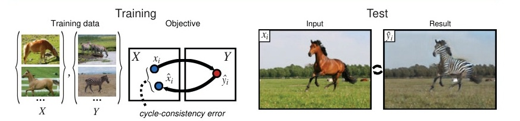
Hình 27.25 Dịch ảnh không bắt cặp (Unpaired image translation): cho hai quần thể ảnh biệt lập (ở đây X là ngựa và Y là ngựa vằn), mà chả có cặp nào kết nghĩa anh em, hệ thống tự học cách phù phép ngựa thành ngựa vằn. Bí kíp là luyện song song 2 tay tiên tri: một lão hô biến X thành Y, lão kia lôi Y thành X. Nếu lão số 1 xào ngựa $x_i$ thành ngựa vằn $\hat{y}_i$, lão số 2 phải gánh còng lưng bóp con $\hat{y}_i$ vỡ ngược lại ra hình hài $x_i$ nguyên thủy. Sự sai lệch tàn phá hình dáng giữa $x_i$ và $\hat{x}_i$ chính là ngọn roi quất vào mông hai con mạng để rèn giũa. Vòng luân hồi từ Y sang X và quay đầu phải được khép kín vô tì vết. Những hệ thống này dư sức múa may đẻ ra những pha biến hình hình ảnh phong phú, đậm chất pháp sư. Ảnh của Alexei A. Efros.
Một trò đùa nghệ thuật rảnh rỗi khác mang tên Chuyển giao phong cách (Style transfer): Đầu vào ném vào hai bức ảnh — nội dung (content) (ví dụ cái ảnh chụp con mèo đang ngáo) và phong cách (style) (ví dụ một bức tranh trừu tượng loằng ngoằng). Lò bát quái sẽ nhào lộn ra một con mèo bọc trong cái giao diện màu mè trừu tượng (như Hình 27.26). Nước đi quyết định để hack bài toán này là bóc tách một mạng CNN cực sâu, vốn chuyên gánh còng lưng đi soi vật thể (như trên ImageNet), ta sẽ phát hiện ra các lớp đầu (early layers) có xu hướng nuốt trọn linh hồn "phong cách", còn các lớp cuối (late layers) rặn ra cái "nội dung" cốt lõi. Gọi $p$ là ảnh nội dung và $s$ là ảnh phong cách, gọi $E(x)$ là bộ mặt đặc trưng tại lớp đầu khi dòm ảnh $x$, và $L(x)$ là bộ mặt đặc trưng tại lớp chót. Bài toán là nặn ra một bức ảnh $x$ xào nấu ra sao mà nội dung cứ phải na ná bức ảnh con mèo — tức là vả hàm loss ép $|L(x) - L(p)|$ chạm đáy; và đồng thời phong cách cũng phải bầy hầy giống bức tranh trừu tượng — tức lại ép $|E(x) - E(s)|$ phải tụt dốc không phanh. Ta múa giải thuật giảm gradient (gradient descent) với hàm loss cõng cả hai cục nợ trên lưng để lùng ra bức ảnh $x$ giảm thiểu mức phạt nhất có thể.
Mạng sinh đối nghịch (GANs) xả ra hàng loạt những bức ảnh giả trân nhưng nét như sony lừa tình hầu hết mọi người trong mọi hoàn cảnh. Điển hình là trò Deepfake — thứ quái đản nhào nặn ra ảnh hay video mượn hồn mượn xác một cá nhân, nhưng đều là đồ giả do máy bịa. Tỉ như khi bà cụ Carrie Fisher bước sang tuổi 60, dân tình làm một quả lột xác CGI chắp hẳn cái khuôn mặt hồi 19 tuổi của bà gắn lên thân một nữ diễn viên đóng thế để vắt kiệt bà trong bộ bom tấn Rogue One. Công nghiệp làm phim bơm thổi deepfake đỉnh cao vì mục đích nghệ thuật, trong khi đội ngũ áo trắng nghiên cứu hói đầu hì hục chế ra mấy món vũ khí chống deepfake để chặn đứng sự lan truyền tàn phá của tin tức lừa đảo (fake news).
Thứ ảnh chế này cũng xài ngon để bọc lót giữ bí mật đời tư. Tỉ dụ, mấy đống hồ sơ X-quang nằm mốc trong kho y khoa là kho tàng vỡ bờ với dân nghiên cứu, nhưng lại bị kẹt cứng đạo luật không được phơi bày bệnh án bệnh nhân. Mô hình ảnh sinh dư sức bê cái kho dữ liệu ẩn danh bí mật đó rồi phun ra hàng loạt tập dữ liệu ảo tung chảo để rải khắp giới nghiên cứu xài xả láng. Kho dữ liệu ảo này phải vươn tới cảnh giới (a) y chang tệp gốc; (b) mà lại không giống đồ thật; và (c) bị giật dây điều khiển tùy ý. Thử xem mấy tấm X-quang phổi. Tệp ảo này phải làm sao cho từng bức ảnh đưa ra lừa đẹp mấy ông bác sĩ X-quang lão làng, và tần suất mắc bạo bệnh cũng phải chuẩn không cần chỉnh, nên tỉ như vụ viêm phổi chẳng làm bác sĩ há hốc mồm ngạc nhiên vì tỷ lệ ảo ma Canada. Thứ dữ liệu mới này cũng phải "khác biệt" đi, để tránh rò rỉ bất cứ vết tích nhân diện cá nhân nào. Và nó cũng phải ngoan ngoãn cho phép ta giật dây nhào lặn tần suất dính bệnh sao cho khớp với thị hiếu của giới nghiên cứu quan tâm. Viêm phổi bủa vây người già nhiều hơn dân thanh niên. Chạm tay vào mỗi một kỳ vọng trên đều chua như giấm vắt, nhưng mớ dữ liệu ảnh ảo chế cháo ra vẫn đôi lúc dắt mũi được các bác sĩ X-quang hành nghề lâu năm (Hình 27.27).
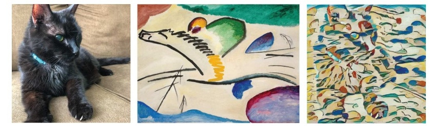
Hình 27.26 Chuyển giao phong cách: Bóc nội dung một bức hình mèo ngáo kết hợp với bộ lọc tranh trừu tượng, đẻ ra tấm ảnh mới con mèo khoác áo trừu tượng ma mị (phải). Tranh gốc là bức Lyrisches (The Lyrical) của lão họa sĩ Wassily Kandinsky (thuộc nhóm không bản quyền tài sản chung); còn con mèo là mắm Cosmo.
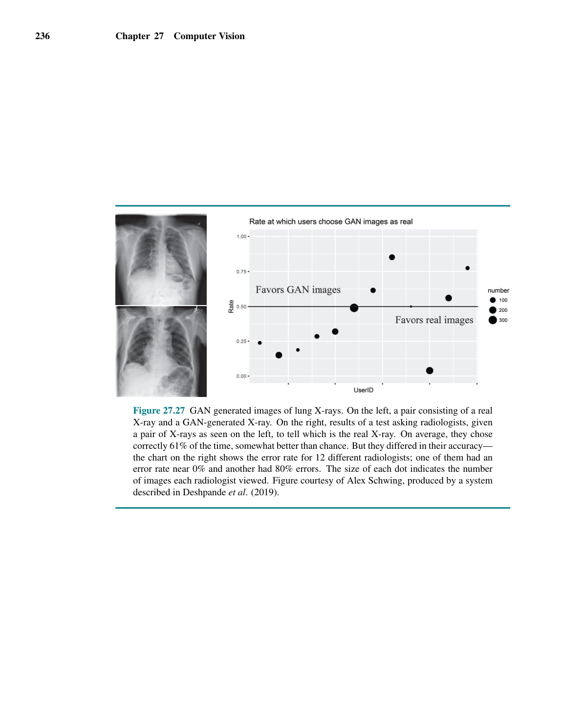
Hình 27.27 Ảnh X-quang phổi bịa đặt bởi mạng GAN. Bên trái, một cặp ảnh đố chữ: một là X-quang xịn xò, hai là đồ rởm GAN chế. Bên phải là điểm số thi rớt môn của mấy tay bác sĩ khi phải vạch lá tìm sâu chỉ ra cái nào là hàng thật. Tính đổ đồng ra, họ ném đá trúng đích có 61%, giỏi hơn đoán mò nhắm mắt chọn hên xui một tí. Nhưng thành tích tụt dốc khác nhau — biểu đồ chóp nhọn tung hỏa mù sai số của 12 bác sĩ chuyên khoa; một thần y sai số gần 0% bóp nát GAN, còn 1 tay khác lún bùn với 80% sai be bét. Cái chấm to đùng trên biểu đồ là mức độ máu liều soi càng nhiều ảnh của từng vị. Ảnh của Alex Schwing.
Một trong những đặc quyền tối cao của đôi mắt là thu gom thông tin để ta tiện bề vọc vạch nhào nặn đồ vật — như bóp, cấu, bốc dỡ hay xoay vòng vòng tụi nó — và để đi càn qua các chướng ngại vật chông gai. Khả năng nhìn đường này cắm sừng cắm rễ ngay trong hệ thống quang học tồi tàn nhất ở những loài động vật cổ lỗ sĩ nhất. Ở nhiều hoàn cảnh, thứ nhãn quang đó chỉ như cọng rơm, hiểu theo nghĩa nó chỉ vắt kiệt mớ thông tin mỏng dính từ bãi chiến trường ánh sáng vừa đủ để điều hướng hành vi sinh tồn. Cực kỳ có lý khi đoán rằng các cỗ máy nhìn hiện đại đã tiến hóa rẽ nhánh từ lũ sinh vật đơn bào cổ xưa, chỉ xài một mụn nhỏ nhạy sáng cắm ở mông để mò mẫm ngoi về phía ánh sáng mặt trời (hoặc chui tọt vào bóng râm). Ta cũng đã chứng kiến lũ ruồi nhặng ở Mục 27.6 dùng quả trick đếm luồng quang học sơ sài vãi lúa để thả cánh hạ độ cao đâm rầm vào tường.
Nếu thay vì trò hạ cánh cọc cạch của lũ ruồi, ta nặn ra một chiếc xe tự lái. Phi vụ này dội bom sức ép tàn sát lên hệ thống nhận thức. Hệ thống lái phụ trợ tự trị phải cày ải gồng gánh những KPI nổ não sau:
Chốt lại, cả tài xế cơm hay máy tính đều phải cuốc cày nặn ra chuỗi tổ hợp phanh - ga - đánh lái để ăn trọn điểm mấy bài kiểm tra sinh tồn này.
Để phán chuẩn, tài xế phải đúc ra một sa bàn thế giới và mọi chướng ngại vật nằm trên đó. Hình 27.28 bung xõa một loạt các lập luận xảo quyệt thị giác cốt tử để dựng cái sa bàn này. Mảng điều khiển ngang ép tài xế phải ôm chặt tọa độ và góc lượn của xe hít đất theo làn đường. Mảng dọc bắt bẻ anh ta giữ khoảng cách vái lạy cái xe trước mặt (trò này đứt gánh dễ ẹt ở mấy khúc cua vòng vèo loạn làn đường). Trò rẽ lượn lách né chướng ngại và xem xét biển báo ngốn thêm rổ lập luận não to khác.
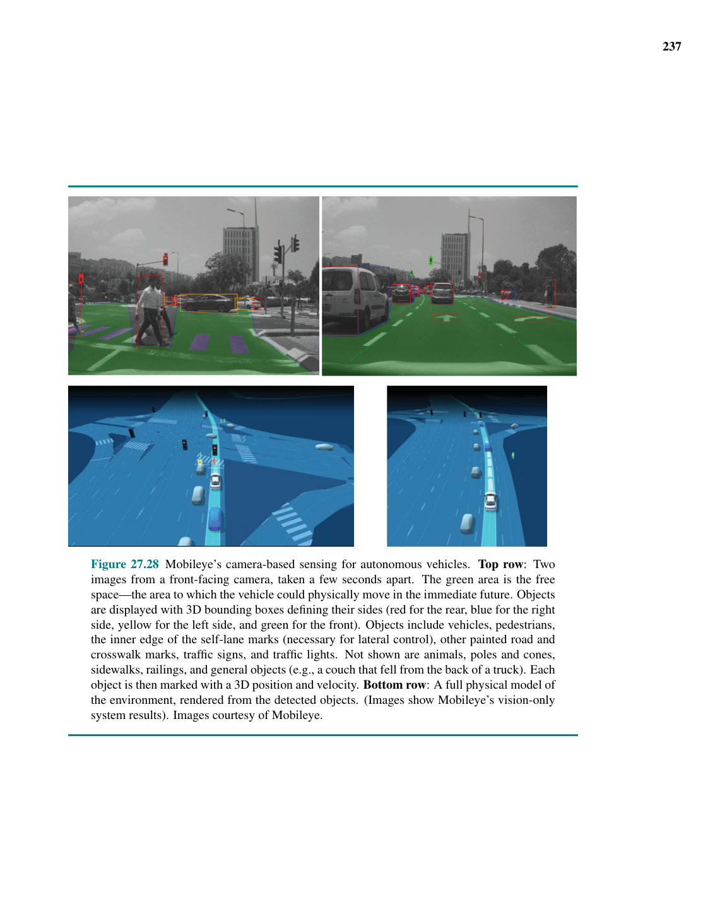
Hình 27.28 Mắt thần bóc phốt camera cho xe không người lái của hãng Mobileye. Hàng trên: Hai quả phơi sáng từ cam kẹp trước, cách nhau mấy giây nháy. Khoảng đồng cỏ xanh lét là không gian tự do — cái sa bàn mà con xe lết xác nhét lọt được ở vài giây kế tiếp. Các chướng ngại vật bị nhốt gọn trong lồng bounding box 3D (đỏ cho mông xe, xanh cho hông phải, vàng hông trái, và xanh lục kẹp đầu). Hội chướng ngại này gồm xe cộ chướng mắt, người đi bộ, lề mương sát vách (cốt để căn chỉnh bánh lái lượn ngang), sơn phản quang kẻ đường, biển báo và cột đèn chớp tắt. Mấy gã lặn mất tăm trên hình có thể là động vật xổng chuồng, cọc tiêu chóp nón, lan can cầu thang, và ba cái rác rưởi ngáng đường (tỉ dụ một cái ghế sô-pha văng lộn cổ khỏi đuôi xe tải). Chốt hạ, từng cục cản đường đó bị ốp thêm thông số tọa độ và tốc độ 3D. Hàng dưới: Lột xác hoàn thiện cái sa bàn vật lý ngút ngàn, render ra từ lũ chướng ngại vật moi được. (Hình này là siêu phẩm từ hàng "thuần camera" tự biên tự diễn của nhà Mobileye). Nguồn: Mobileye.
Đường sá trải nhựa sinh ra để phục vụ cái lũ người suốt ngày lái xe bằng đôi mắt, nên về lý thuyết ta xách mắt camera ra là đạp ga chạy phà phà. Cơ mà thực tế phũ phàng, xe tự lái xịn xò thương mại vác trên lưng đủ loại râu ria cảm biến, từ camera, radar, lidar đến cả ống nghe microphone. Hội radar với lidar trực tiếp nhổ cái chiều sâu không gian cắm vào não, đè bẹp sự ảo ma của mấy trò tính nhẩm độ sâu bằng camera sặc mùi lý thuyết ở Mục 27.6. Đắp hàng tá cảm biến vào giúp hack sức mạnh xe bứt top, cực kỳ bá đạo ở mấy lúc mù đường khuất tầm nhìn; ví dụ, sương mù dày đặc làm mù mắt camera với lidar, nhưng đành bó tay chịu trói trước sức công phá đâm xuyên của radar. Mấy cái mic rúc rích đánh hơi được còi rền của tụi cấp cứu hoặc cứu hỏa từ lúc cái xe còn lặn tăm chưa ló mặt.
Dân chúng cũng đập tiền đổ mồ hôi nghiên cứu cho bọn robot lóc cóc giao hàng ngoài đường lẫn trong nhà. Mấy ứng dụng hái ra tiền ngập ngụa, điển hình là chặng giao bánh pizza hay gói bưu phẩm chặng nước rút cuối cùng. Cái trò kinh điển thường chẻ phi vụ thành hai nốt nhạc như gõ mõ Hình 27.29:
Vô vàn bản nháp chỉnh lý từ cái khuôn mẫu trên đã bị dân công nghệ moi gan lôi ruột. Tỉ dụ, bằng chiêu thức lập kế hoạch và vẽ sa bàn nhận thức, hai màn lập sa bàn và vẽ đường chỉ là hai chíp modul cắm trong mạng nơ-ron được nhào nặn huấn luyện một lèo "từ đầu rốn tới chân răng" (end-to-end) hòng vắt kiệt cái hàm loss. Lỗ hổng là một bộ máy như này chẳng thèm vắt óc đúc trọn vẹn cái bản đồ bự chà bá — hành động mà thường được miêu tả là thừa thãi nhảm nhí — nếu nó chỉ hăm hở thu gom chắp vá vừa đủ mẩu thông tin để nhảy chồm chồm từ A qua B mà né gọn mọi sự cản trở chướng mắt.
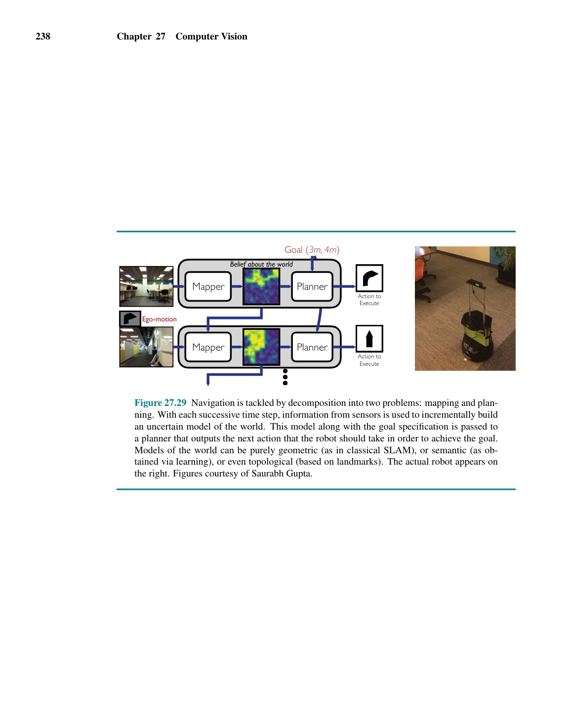
Hình 27.29 Thuật dẫn đường được đục khoét chẻ thành hai rắc rối: Vẽ bản đồ (mapping) và Lập kế hoạch (planning). Cứ sau mỗi cái nháy mắt tích tắc, dữ liệu moi từ râu ria cảm biến được bồi đắp nhào nặn ra một cái mô hình thế giới mù mờ ảo diệu. Cái mô hình này cõng trên lưng mục tiêu cuối được ném rầm vào cái lò lập kế hoạch (planner) để nó rặn ra một thao tác nước đi kế tiếp giục con robot đạp ga bò đến đích. Mô hình sa bàn thế giới có khi chỉ là khung xương hình học (như cái trò SLAM cổ lỗ sĩ), hoặc hóa kiếp dưới dạng siêu thực tế ngữ nghĩa (bóp nặn nhờ máy học), hay bám trụ vào các trụ cột cột mốc (topological). Con robot đời thực gầm rú ở tít ngoài góc phải. Hình ảnh bóc lột từ Saurabh Gupta.
Dẫu cái trò "nhìn thấy" có vẻ chỉ là phản xạ rảnh rỗi xì hơi nhẹ tênh ở loài người, nó vắt kiệt khối tài nguyên não bộ với hằng hà sa số các bài toán tính toán siêu kinh điển và tàn phá noron. Tôn chỉ của cỗ máy nhãn quan là moi ruột thông tin để tống vào các phi vụ như cầm nắm ném vứt đồ, càn lướt điều hướng ngoài đường, và điểm mặt chỉ tên nhận dạng chướng ngại vật.
Cái chương này xả láng đổ máu tập trung vào cái nhãn quang thị giác, nhưng hàng đống đường hầm giác quan khác cũng bị xẻ thịt nghiên cứu và ném vào lò luyện robot phế phẩm. Với nhận thức thính giác (auditory perception), ta bóp nát xào nấu vụ nhận diện giọng nói ở các phần trước rồi, và mớ công trình xới tung nhận thức âm nhạc cũng nhan nhản (Koelsch và Siebel, 2005) kèm theo máy học nhai nuốt rặn ra âm nhạc (Engel et al., 2017) cũng như học máy ngậm rập thu nạp mọi loại âm thanh nhảm nhí ngoài kia (Sharan và Moir, 2016).
Kênh xúc giác, hay sự mơn trớn sờ soạng (tactile perception) (Luo et al., 2017) là bảo kiếm cốt tử trong ngạch robot và đã bị đập nát để bàn ở Chương 26. Nhận thức khứu giác mũi điếc (olfactory) tự động thì ít người cày cuốc, cơ mà thực tế chứng minh mô hình học sâu nuốt chửng được trò bói mùi dựa vào các nguyên tử phân tử sinh hóa (Sanchez-Lengeling et al., 2019).
Tham vọng trần trụi của con người để thông não thị giác đã rễ cắm sâu từ thời đồ đá cổ đại. Lão Euclid (cỡ 300 năm TCN) hì hục cào viết về sự thu ngắn phối cảnh tự nhiên — kiểu nhào nặn gom một cái điểm P ở thế giới 3D ốp thẳng hướng đâm xuyên vào tia OP cắm phập vào lỗ mắt O (trung tâm hình chiếu) nối tới P. Lão thừa sự khôn ngoan mưu mô để giác ngộ cái chân lý mang tên thị sai chuyển động (motion parallax). Đám nghệ thuật tranh cổ La Mã, điển hình là cái mớ tranh sống sót vớt lên từ bụi tro núi lửa Vesuvius nổ tưng bừng năm 79 SCN, xài cái mớ phối cảnh lố lăng phi quy chuẩn, thò ra cả đống đường chân trời song hành.
Luồng sóng thứ hai ngộ đạo toán học về sự ép phối cảnh phóng chiếu thẳng vào một bức vách tường thẳng đứng lột xác mạnh mẽ ở nước Ý thế kỷ 15, thời Phục hưng. Lão Brunelleschi vỗ ngực tự xưng là kẻ cầm cờ khai phá mấy bức tranh phối cảnh hình học 3D y như thật vào tầm năm 1413. Tới năm 1435, Alberti khắc rập làm luật hóa mấy cái mớ lý thuyết đó, tiêm sọ não thành sách gối đầu giường xúi bẩy hàng tá thế hệ họa sĩ sau này lún lầy vào. Điểm danh nổi bần bật của ngạch "khoa học phối cảnh" hồi xưa đó phải lạy cụ Leonardo da Vinci và Albrecht Dürer. Đống bút tích vạch lá tìm sâu trò nhào lộn ánh sáng, cắt xẻ độ mờ và bóng tối tăm (chiaroscuro), cũng như góc chết vùng nửa sáng nửa tối, dính thêm vụ xào nấu cái lớp phối cảnh khí quyển do lão Leo cào não hồi cuối thế kỷ 15 đến giờ lôi ra dịch lại cày vẫn bá đạo (Kemp, 1989).
Dẫu mấy tay quý tộc Hy Lạp xưa nắm sỏi về luật bóp méo phối cảnh, tụi nó vẫn lầm lì ảo tưởng sức mạnh vụ con mắt hoạt động ra sao. Cha nội Aristotle lầm tưởng mắt người là cái ổ súng đạn bắn tia lade sáng quét xung quanh. Giấc mộng ảo ma Canada này bị đạp chết tươi bởi mấy học giả dân Ả Rập xịn xò, chóp bu là Alhazen hồi thế kỷ thứ 10.
Kế tiếp, binh đoàn máy móc tạo ảnh rầm rộ bành trướng. Chúng là mấy cái phòng nhốt kín (chữ camera gốc rễ từ tiếng Latin là "buồng phòng") lủng lỗ nhỏ li ti khoét trên vách để thu ánh sáng bóp tụ lại lòi ra nguyên một cái khung cảnh ngóc ngách ngoài đường đập lên cái vách tường sừng sững bên kia. Cay đắng ở chỗ, mọi loại hộp ngắm kiểu này đẻ ra hình lộn nhào lộn cổ, tung hỏa mù gây điên loạn triền miên. Nếu đánh đồng mắt người với lũ buồng tối chụp ảnh què quặt ấy, làm quái nào não người dọn dẹp nhào nặn được ảnh lại đúng chiều thẳng tắp? Chướng ngại vật này hất tung chất xám vắt kiệt não các bộ óc tinh quái nhất vũ trụ đương thời (kể cả thánh Leonardo). Đành ôm hận chực chờ mấy tay như Kepler với Descartes phá lệ chốt hạ phi vụ. Lão Descartes đè ngửa lột phăng đi cái lớp vỏ ngoài che đậy của tròng mắt rồi cắm phập thẳng vô cái khe hở của tấm cửa chớp. Nôn ra ngay kết quả là quả hình bị đảo lộn úp sấp in hằn trên trang giấy đè lên võng mạc (retina). Mặc cho ảnh dính trên võng mạc cắm đầu chổng mông xuống đất, mọi sự vẫn ngon nghẻ bởi cái sọ khỉ của bộ não khôn ranh đủ ma lanh để bẻ khóa hack ngược hình ảnh về chuẩn. Phán theo ngôn ngữ lập trình mồm thời nay, người ta chỉ việc móc thông tin từ mớ cơ sở dữ liệu cấu trúc lằng nhằng sao cho mượt là được.
Nhát chém rẽ đất mở mang chân trời cho giới thị giác diễn ra trong thời lộn xộn của thế kỷ 19. Mớ công trình của Helmholtz và Wundt đập nát ở Chương 1 đã gióng lên hồi chuông móng chốt cho cái gọi là khoa học đo lường tâm sinh lý như một nhánh phái thực nghiệm nghiêm túc gắt gao cực đoạn. Nối gót Young, Maxwell, và Helmholtz, thứ thuyết sừng sỏ ba màu chủ đạo thị giác màu bị đóng khung bê tông.
Thực tế hiển nhiên là con người vẫn nhìn thấu chiều sâu dẫu cho hình ảnh ném vào hai mắt có lệch pha nhau xíu xiu đã được chứng minh rực rỡ bởi phát minh kính tiềm vọng lập thể (stereoscope) của Wheatstone (1838). Cái món đồ chơi này ngay tắp lự gây bão càn quét mọi phòng khách và tiệm làm đẹp trên toàn châu Âu.
Khái niệm cốt tủy của thị giác hai mắt — rằng hai bức ảnh chụp cùng một cảnh từ hai góc nhìn xê xích nhau tí ti cũng chứa đủ dư dả thông tin để bóc trần bộ mặt 3D của không gian đó — đã bị ngành phép đo đạc ảnh (photogrammetry) vắt kiệt. Hàng loạt thành tựu toán học sừng sỏ được khai quật; tỉ dụ, Kruppa (1913) chứng minh mười mươi rằng, chỉ cần ném cho 2 bức ảnh chụp 5 điểm khác bọt trong một khung cảnh, ta thừa sức nặn ngược lại quỹ đạo xoay và trượt tịnh tiến giữa 2 camera lẫn chiều sâu thăm thẳm của khung cảnh (đương nhiên vẫn bị vướng cái rào cản tỷ lệ co giãn).
Dẫu cái mớ hình học thị giác hai mắt đã bị con người thấu hiểu tới tận xương tủy từ xửa xừa xưa, trò bài ngửa đối chiếu điểm ảnh của ngành đo đạc ảnh ngày ấy vẫn dùng sức trâu của con người để gò lưng dò dẫm. Cái sức mạnh phi phàm của não người trong vụ đối chiếu này được lão Julesz (1971) bóc phốt bằng mớ ảnh chấm ngẫu nhiên lập thể (random dot stereograms). Thế giới thị giác máy tính từ đó đã đổ không biết bao nhiêu xương máu cốt để rặn ra bằng được một thuật toán tự động giải mã cái bài toán đối chiếu quỷ quái này.
Nửa đầu thế kỷ 20, những quả bom tấn chấn động nhất trong mảng thị giác lại rơi rụng từ phe phái tâm lý học Gestalt, do lão đại Max Wertheimer cầm đầu. Tụi này chọc ngoáy vào sự hệ trọng của tổ chức nhận thức: với con người, hình ảnh không phải là bãi rác điểm ảnh (pixel) nhố nhăng của bọn tế bào cảm quang điểm xuyết, mà nó được cấu kết thành các khối gắn kết chặt chẽ. Trò bới lông tìm vết dò vùng sáng và nét cong của thị giác máy tính chính là ăn mày từ triết lý này. Phe Gestalt cũng chĩa mũi nhọn vào hiện tượng "Hình-Nền" (figure-ground) — một cái bờ bao chia cách hai mảng ảnh đang nằm ở hai tầng sâu khác nhau ngoài đời thực chỉ ngoan ngoãn bám víu vào cái mảng nằm gần mắt hơn, gọi là "Hình", chứ tuyệt nhiên không thèm dính dáng tới mảng xa tít mù tắp, gọi là "Nền".
Di sản của hội Gestalt được J. J. Gibson (1950, 1979) bế đi tiếp. Ông nội này bóc phốt sức ảnh hưởng của luồng quang học và dải phân cách họa tiết (texture gradients) trong việc bói toán các hằng số môi trường như góc nghiêng và độ ngả của bề mặt. Lão nhắc đi nhắc lại sức mạnh của sự kích thích và cái mớ thông tin mỡ màng của nó. Gibson, Olum, và Rosenblatt (1955) dõng dạc tuyên bố luồng quang học ôm trọn bầu sữa thông tin để định vị chuyển động của kẻ quan sát so với thế giới xung quanh. Gibson đặc biệt hâm mộ vai trò của một kẻ quan sát tăng động, kẻ thích tự thân vận động nhảy nhót ngó nghiêng để lượm lặt móc túi thông tin từ môi trường ngoại cảnh.
Cái gọi là thị giác máy tính thò mặt ra đời từ tận những năm 1960. Cuốn luận văn của Roberts (1963) ở MIT chuyên trị việc săm soi các khối lập phương và ba cái trò hình khối vớ vẩn là một trong những cuốn bí kíp đầu tiên gõ cửa thế giới này. Roberts nhào nặn ra một rổ chiêu trò tinh túy, bao gồm kỹ thuật dò đường biên và thuật bắt cặp xài mô hình.
Vào những năm 1960 và 1970, mọi thứ ì ạch rùa bò, kẹt cứng bởi tốc độ máy tính cùi bắp và ổ cứng chật hẹp. Mọi ánh nhìn dồn vào việc nhai lại xử lý hình ảnh cấp thấp, xài ké mấy mớ võ vẽ mượn từ ngành xử lý tín hiệu, nhận dạng khuôn mẫu và gom cụm dữ liệu (data clustering).
Chuyện dò biên được nâng bi như bước dạo đầu sống còn của xử lý ảnh, vì nó chém gục khối lượng dữ liệu phải nuốt. Bí kíp dò biên Canny lẫy lừng thiên hạ được John Canny thả xích năm 1986. Martin, Fowlkes, và Malik (2004) trổ tài nhào lộn trộn lẫn thập cẩm các manh mối như độ sáng, họa tiết và màu sắc tống vào một lò bát quái máy học để móc ra các đường cong ranh giới ngon lành cành đào hơn.
Cái trò bới móc các vùng liền mạch về độ sáng, màu sắc và họa tiết, dĩ nhiên rất tự nhiên bị biến tướng thành một cuộc thi xem ai phân chia tối ưu nhất. Ba cái ví dụ bá đạo nhất là xài Trường Markov ngẫu nhiên của Geman và Geman (1984), cái trò ma thuật biến phân của Mumford và Shah (1989), và nhát cắt chuẩn hóa (normalized cuts) của Shi và Malik (2000).
Suốt thập niên 1960, 1970, 1980, thiên hạ xé làm hai phe xâu xé nhau vụ nhận diện nhãn quan, mỗi phe ảo tưởng một chân lý cốt lõi khác nhau. Phe nghiên cứu thị giác máy tính bám váy nhận diện đối tượng thì đâm đầu vào mấy cái lỗi lầm từ vụ dập bóng đối tượng 3D bẹp dí xuống ảnh 2D. Cái trò "căn chỉnh" (alignment) do cụ tổ Roberts đẻ ra lại trỗi dậy ở thập niên 80 nhờ tay Lowe (1987) và Huttenlocher với Ullman (1990).
Phái "nhận dạng khuôn mẫu" thì giở bài khác, coi rác rưởi dăm ba cái rắc rối 3D bẹp ra 2D. Bọn họ bị ám ảnh bởi trò nhận diện ký tự quang học với quét mã zip code viết ngoáy. Thế nên mục tiêu tối thượng của họ là dạy máy tính cách bóc mẽ mấy nét viết loằng ngoằng biến hóa khôn lường của một chủng loại, để mà vạch mặt bọn chúng khỏi các loài khác. Nguồn gốc của cấu trúc mạng nơ-ron chuyên soi ảnh thực chất là chôm chỉa từ công trình mổ não mèo và khỉ của Hubel và Wiesel (1962, 1968) để soi vỏ não thị giác. Hai lão này nặn ra cái mô hình mạng lưới thị giác phân cấp, với đám tế bào thần kinh ở khu ổ chuột (vùng V1) thì phản ứng rần rần với dăm ba cái vạch thẳng mép cạnh chéo ngoe, còn bọn tế bào thần kinh tầng lớp tinh hoa lại nhảy dựng lên với các kích thích độc dị hơn (mà trong phim hoạt hình người ta hay châm biếm gọi là "tế bào bà ngoại").
Fukushima (1980) rặn ra một cái kiến trúc mạng nơ-ron nhận dạng khuôn mẫu bám càng cực chặt vào lý thuyết phân cấp của Hubel và Wiesel. Mô hình của lão xài chiêu kẹp thịt đan xen lớp tế bào đơn giản với phức tạp, nhờ đó nuốt trọn trò thu nhỏ (downsampling), lại còn nhồi thêm quả kháng dịch chuyển (shift invariance), thành ra bê nguyên vẹn bản chất cấu trúc tích chập vào. LeCun et al. (1989) bồi thêm cú đấm thép bằng cách xài trò lan truyền ngược (back-propagation) để quất roi dạy dỗ trọng số của cái mạng này. Bùm! Cái thứ quái thai mà ngày nay ta gào thét gọi là Mạng Nơ-ron Tích Chập (CNN) đã lọt lòng mẹ. Cứ mò đọc LeCun et al. (1995) để hóng hớt xem đám kiến trúc này đấu đá nhau ra sao.
Từ cuối thập niên 90, bám càng sự lên ngôi bành trướng của mô hình xác suất và học máy thống kê trong giới AI, hai cái trường phái thù địch kia bắt đầu đình chiến, cọ cọ xát xát vào nhau. Hai thành tựu bành trướng vĩ đại nhất: Một là công cuộc bới móc tìm khuôn mặt (Rowley et al., 1998; Viola và Jones, 2004), trò này tát thẳng vào mặt thiên hạ sức mạnh vô biên của các ngón đòn nhận dạng khuôn mẫu lên những cái bài toán đẻ ra tiền. Hai là trò đẻ ra cái đống "mô tả điểm" (point descriptors), công cụ giúp rặn ra vector đặc trưng từ từng khúc thân thể của đồ vật (Schmid và Mohr, 1996). Có ba tuyệt chiêu móc ra một bộ mô tả điểm cục bộ thượng thừa: xài trò "góc xoay" để bật khiên chống mù ánh sáng; phải xăm xoi móc ruột chi tiết cái đống cấu trúc ảnh quanh cái mụn điểm đó, còn phía xa xa thì ngó lơ cho qua chuyện; và xài biểu đồ histogram không gian để bóp nghẹt mấy sai số linh tinh vụn vặt khi găm sai tọa độ điểm. Bộ SIFT bá đạo của Lowe (2004) bòn rút triệt để 3 tuyệt chiêu này; một cái gai trong mắt SIFT là bộ HOG của Dalal và Triggs (2005).
Thập niên 90 và 2000 chứng kiến màn cãi vã tung trời giữa bọn cuồng thiết kế đặc trưng xịn xò (như team SIFT, HOG) và bọn tôn sùng mạng nơ-ron (tin sái cổ rằng ném dữ liệu vào là mạng sẽ tự ị ra đặc trưng ngon ăn). Muốn dập tắt võ mồm thì xách mông đi thi trên dữ liệu chuẩn, và trong những năm 2000, cái bảng vàng PASCAL VOC cho bài toán dò đối tượng đã nghiêng cán cân về phía bọn cày cuốc đặc trưng thủ công. Thế cờ lật ngửa cái rụp khi Krizhevsky et al. (2013) cầm con quái thú mạng nơ-ron (AlexNet) nhảy vào vùi dập sạch bách mọi đối thủ trong làng thị giác trên đấu trường phân loại ảnh ImageNet, cho tỷ lệ lỗi tụt quần.
Bí kíp gia truyền nào bơm máu cho AlexNet? Châm chước ba cái đồ chơi công nghệ (như xài ReLU), ta phải quỳ lạy dập đầu tạ ơn hai vị thánh Dữ liệu Khủng (big data) và Tính toán Khủng (big computation). Dữ liệu Khủng là cái thứ kho ảnh dán nhãn chà bá lửa như ImageNet, làm bao cát tập võ cho tụi mạng nơ-ron béo múp chứa hàng triệu tham số. Mấy cái kho đồ cổ như Caltech-101 hay PASCAL VOC hồi xưa làm qué gì đủ dữ liệu, còn MNIST với CIFAR thì bị dân thị giác coi như "đồ chơi con nít". Cơn bão bốc lột sức lao động đi dán nhãn dữ liệu để test máy và cày cuốc thống kê lại vô tình phất lên nhờ cái thói nghiện đăng ảnh lên mạng (như Flickr) của đám giang hồ mạng. Còn mảng Tính toán Khủng phất lên như diều gặp gió phần lớn nhờ vào tụi GPU, ba cái đồ phần cứng xàm xí ban đầu đẻ ra chỉ để phục vụ mấy ông nghiện cày game đồ họa.
Sau đó chỉ tầm một hai năm, cờ bay phấp phới ngập mặt. Ví dụ cái con RCNN (mạng nơ-ron tích chập dựa trên vùng) của Girshick et al. (2016) chứng minh rằng chỉ cần tháo tung AlexNet, nhét thêm vài chiêu trò thị giác như "đề xuất vùng", là tự khắc càn quét chễm chệ chóp bu bảng vàng săn tìm vật thể trên PASCAL VOC. Ta chợt ngộ ra chân lý là mạng càng sâu (nhiều lớp) thì càng xịn, và cái chứng sợ hãi bị "overfitting" (học vẹt) toàn là lo bò trắng răng. Chưa kể ta còn lận lưng vài món bảo bối mới như batch normalization để dẹp loạn chuẩn hóa.
Phi vụ mổ xẻ dựng khung 3D từ mớ góc nhìn hỗn loạn thực chất đào mộ từ kinh thư của bọn đo đạc ảnh (photogrammetry). Ở kỷ nguyên thị giác máy tính, mấy thánh Ullman (1979) và Longuet-Higgins (1981) là những kẻ khai quốc công thần đầu sỏ. Cơn hoang tưởng về độ rệu rã của trò nặn 3D từ chuyển động đã bị Tomasi và Kanade (1992) dập tắt tàn bạo, 2 cha nội này ném bằng chứng vào mặt thiên hạ rằng chỉ cần xài nhiều khung ảnh (rộng đường cơ sở), cái khung hình nặn ra sẽ xịn xò sắc lẹm.
Cú lột xác não bộ ở thập niên 90 là trò cày cuốc dựng hình 3D từ cấu trúc chiếu không cần thiết lập tham số camera (projective structure from motion). Lão Faugeras (1992) chốt sổ luôn là chẳng cần thèm cân đo đong đếm máy ảnh làm quái gì. Phát kiến này là anh em ruột với cái phong trào moi móc các bất biến hình học (geometrical invariants) đem đi nhận dạng đồ vật, do Mundy và Zisserman (1992) làm cò mồi, và sự ngoi lên của cái thứ cấu trúc afin từ chuyển động do Koenderink và Van Doorn (1991) xào nấu.
Vào những năm 1990, với CPU chạy bốc đầu và ổ cứng rẻ bèo cùng video kỹ thuật số rải rác ngoài đường, ba cái màn phân tích chuyển động đẻ ra hàng đống ứng dụng béo bở. Cái trò nặn sa bàn hình học của thế giới thực để quăng vào cho đồ họa máy tính xào nấu render bỗng nổi như cồn, kẻ châm ngòi là mấy thuật toán nặn 3D như quả bom của Debevec et al. (1996). Mấy cuốn bí kíp của Hartley và Zisserman (2000) cùng Faugeras et al. (2001) đã lột trần tận đáy hình học nhiều góc nhìn.
Trần gian ai cũng tia được hình khối với vách ngăn chỉ từ 1 tấm ảnh, nhưng với bọn nghiên cứu thị giác máy tính thì trò này khoai lang vô độ. Trò bói ra hình dáng từ đổ bóng do Berthold Horn (1970) gõ búa khai mạc, và Horn với Brooks (1989) làm một bài chém gió xả láng điểm mặt mọi bài báo xịn xò về cái trò từng làm mưa làm gió này. Gibson (1950) là tay đầu sỏ dám xúi bẩy xài dải màu họa tiết làm chim lợn báo dáng. Đống toán học cày nát các đường viền che khuất (occluding contours), hay xa hơn là bóc mã đống chiêu trò hình ảnh dội lại từ cục vật thể cong láng mịn, mang nặng ân huệ của Koenderink và van Doorn, đống này bị hành hạ dã man trong cuốn Solid Shape của Koenderink (1990).
Gần đây, bàn dân thiên hạ quay xe ném cái cục nợ rặn ra hình dáng và mặt phẳng từ một bức ảnh cô đơn vào cái rổ "bài toán suy luận xác suất", ở trỏng ba cái manh mối hình học chả cần bọc lót tính toán rõ ràng, mà cứ ngấm ngầm xài ké cái lò luyện máy học. Ví dụ chói lóa nhất là trò của Hoiem et al. (2007); gần đây người ta lại lôi cái đó ra chọc ngoáy lại bằng búa rìu học sâu (deep neural networks).
Giờ xoay vô lăng bẻ lái lượn lờ mảng ứng dụng thị giác dẫn lối hành động. Dickmanns và Zapp (1987) đã dõng dạc khoe con xe tự lái phi xé gió trên cao tốc; Pomerleau (1993) cũng đú trend làm quả y chang xài mạng nơ-ron. Giờ thì xe tự hành là quả trứng ngỗng vàng óng ánh, mấy ông trùm xế hộp xắn tay áo múc nhau sứt đầu mẻ trán với bọn lính mới tò te cỡ Baidu, Cruise, Didi, Google Waymo, Lyft, Mobileye, Nuro, Nvidia, Samsung, Tata, Tesla, Uber, và Voyage để quăng ra đường đủ thứ đồ chơi từ cò con phụ lái đến trùm cuối tự lái rảnh tay 100%.
Dành cho mấy con nghiện thèm khát hít hà thị giác người thật, cuốn Vision Science: Photons to Phenomenology của Stephen Palmer (1999) là liều thuốc toàn thư dập tắt cơn khát; cuốn Visual Perception: Physiology, Psychology and Ecology của Vicki Bruce, Patrick Green, và Mark Georgeson (2003) là quyển bí kíp mì ăn liền mỏng tèo hơn. Hai cuốn Eye, Brain and Vision của David Hubel (1988) và Perception của Irvin Rock (1984) thì ve vuốt bạn nhập môn sinh lý thần kinh với nhận thức siêu mượt. Sách Vision của lão David Marr (Marr, 1982) chễm chệ ôm mâm vàng lịch sử vì làm cái móc khóa nối hai thế giới: thị giác máy móc với cái đám sinh học thị giác truyền thống cổ hủ (tâm lý-vật lý với sinh thần kinh). Dù ba cái thuật toán tồi tàn của ổng (kiểu dò mép, nhận diện đồ) đã chết tươi trên đống thời gian, cơ mà cái tư tưởng vĩ mô — chia năm xẻ bảy một phi vụ thành các tầng thông tin, tầng tính toán, và tầng vận hành — thì vẫn sáng lòa như đèn pha ô tô.
Cho dân chơi thị giác máy tính, hai pho từ điển thượng võ xịn xò nhất thời nay là Computer Vision: A Modern Approach (Forsyth và Ponce, 2002) và Computer Vision: Algorithms and Applications (Szeliski, 2011). Mớ bòng bong hình học nhức não trong làng thị giác bị lột trần dập te tua trong cuốn Multiple View Geometry in Computer Vision (Hartley và Zisserman, 2000). Chốt hạ, đống kinh thư này đẻ ra từ thời học sâu (deep learning) chưa lên ngôi phá nát cõi mạng, thế nên muốn xài hàng nóng hổi thì cứ vác mặt đi lùng sục báo lá cải nghiên cứu mới nhất thôi.
Hai đấu trường đẫm máu gánh còng lưng giới thị giác máy tính là IEEE Transactions on Pattern Analysis and Machine Intelligence và International Journal of Computer Vision. Lễ hội quần hùng tụ họp thị giác máy tính gồm ICCV, CVPR, và ECCV. Ai ghiền nhét học máy dính máu vô thì chui vào đấu trường NeurIPS, còn mảng chơi đồ họa máy tính lai căng thì hay ném bom ở ACM SIGGRAPH. Hằng hà sa số bài chém gió thị giác cũng tuồn lậu nhan nhản trên máy chủ arXiv dưới dạng chưa kiểm duyệt (preprints), và cứ có cái quái gì mới là bị rò rỉ rùm beng trên mấy cái blog của các tay to nghiên cứu chóp bu.